8. Evaporación
La evaporación es el punto en que el balance de agua y el balance de energía se convierten en una misma pregunta hidrológica.
Idea guía del capítulo
8.1. Introducción
La evaporación devuelve agua desde océanos, lagos, ríos, suelo, nieve y superficies vegetales hacia la atmósfera. En las plantas, el transporte termina mayoritariamente como transpiración a través de los estomas; en un dosel mojado, parte de la precipitación interceptada regresa a la atmósfera antes de alcanzar el suelo. El conjunto de estos flujos conecta la rama terrestre y la rama atmosférica del El ciclo hidrológico. Esa conexión es cuantitativamente decisiva: una síntesis global estimó que la evaporación terrestre anual supera aproximadamente en 54 % a la escorrentía continental que llega al océano (World Meteorological Organization, 2008; Rodell et al., 2015). La proporción no debe aplicarse a una cuenca particular, pero muestra que la rama ascendente del ciclo es, globalmente, mayor que la salida fluvial.
Sin embargo, evaporar agua no depende de una sola variable. Se requiere una fuente de agua, energía para vencer las fuerzas intermoleculares y un mecanismo que retire el vapor desde la superficie. La radiación neta suministra gran parte de la energía; la humedad, la temperatura y el viento controlan la capacidad de transporte de la atmósfera; y el suelo, la vegetación o un cuerpo de agua regulan el suministro. Por eso, dos lugares con igual temperatura pueden evaporar cantidades distintas, y una mayor demanda atmosférica no garantiza una mayor evaporación real si el agua se agota.
Esta distinción tiene consecuencias de ingeniería. La evaporación reduce el volumen útil de embalses, controla los requerimientos de riego, modifica la humedad del suelo, condiciona sequías agrícolas, acopla ecosistemas y atmósfera, y determina qué fracción de la precipitación queda disponible como escorrentía y recarga. La dificultad es que el flujo no se observa con la sencillez de una altura de agua o una precipitación acumulada. Se infiere mediante balances, instrumentos micrometeorológicos, lisímetros, bandejas, modelos o sensores remotos; cada método representa una superficie y una escala diferentes (Robinson and Ward, 2017; World Meteorological Organization, 2008; Chow et al., 1988; Davie, 2008).
La Figura 8.1 organiza el razonamiento del capítulo. Primero se define el proceso y sus controles; luego se desarrollan las leyes radiativas necesarias para calcular la energía disponible; después se analiza el balance de energía, la variabilidad espacial y temporal y los métodos de estimación. Finalmente, el marco de Budyko combina balances de agua y energía para interpretar la partición media de largo plazo en una Cuenca hidrográfica.

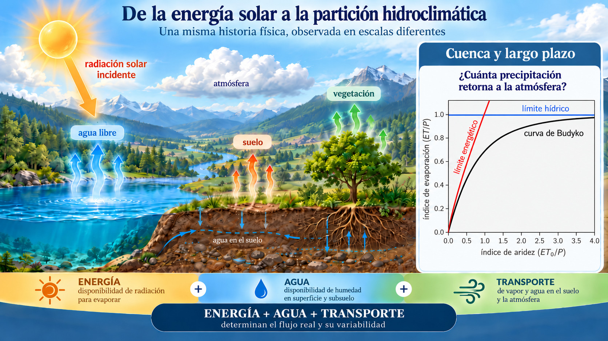
Figura 8.1 Ruta conceptual desde la radiación solar hasta la partición hidroclimática de largo plazo. Elaboración propia.
Objetivos de aprendizaje
Al finalizar el capítulo se espera que el lector pueda:
distinguir evaporación, transpiración, evaporación de agua interceptada y evaporación total;
explicar por qué la evaporación necesita simultáneamente agua, energía y transporte turbulento;
aplicar las leyes de Planck, Wien y Stefan-Boltzmann al balance radiativo terrestre;
calcular radiación extraterrestre, radiación neta y energía equivalente de evaporación con unidades consistentes;
interpretar la partición de radiación neta entre calor del suelo, calor sensible y calor latente;
justificar patrones diarios, estacionales y espaciales de evaporación;
seleccionar métodos de medición o estimación compatibles con la escala de una aplicación;
formular y aplicar el marco de Budyko, incluida la ecuación de Fu; y
reconocer cuándo los supuestos de largo plazo, cierre de cuenca y estacionariedad no son defendibles.
8.2. El proceso de evaporación en el ciclo hidrológico
8.2.1. Evaporación, transpiración e intercepción
La evaporación es el cambio de fase mediante el cual agua líquida –o hielo mediante sublimación– pasa a vapor y se transporta hacia la atmósfera. Puede ocurrir desde agua libre, suelo húmedo, nieve, hielo, gotas retenidas sobre la vegetación y otras superficies mojadas. La transpiración es el flujo de agua que atraviesa la planta desde el suelo, asciende por el xilema y se vaporiza en las cavidades foliares antes de difundirse a través de los estomas. La evaporación de intercepción corresponde al agua almacenada temporalmente sobre hojas, ramas y tallos que retorna a la atmósfera. La formación y medición de la precipitación que origina ese almacenamiento se desarrollan en el capítulo 07.
La expresión evapotranspiración se usa ampliamente para la suma de evaporación desde el suelo y transpiración. En balances de cuenca suele emplearse en un sentido más amplio que incorpora también intercepción y, según el caso, evaporación desde agua libre o nieve. Esta conveniencia exige declarar la variable. Un producto denominado ET puede representar sólo suelo y vegetación, mientras otro cierra todo el flujo de agua terrestre hacia la atmósfera. La terminología no es inocua: la intercepción puede aportar una fracción apreciable del flujo en bosques húmedos y responde a la frecuencia de los eventos, no sólo a la precipitación total (Robinson and Ward, 2017; World Meteorological Organization, 2008; Miralles et al., 2020).
Existe además un debate conceptual sobre el nombre del flujo. Savenije (2004) propuso abandonar evapotranspiración porque la transpiración es físicamente una evaporación que ocurre en las cavidades foliares y porque el término puede invisibilizar la intercepción. Miralles et al. (2020) retomó el problema y recomendó usar evaporación terrestre como término paraguas, manteniendo explícitos sus componentes. Este capítulo adopta esa convención: evaporación total es la suma de transpiración, evaporación de intercepción, evaporación de suelo y evaporación de agua libre o nieve. Se conserva ET cuando una ecuación, producto o práctica profesional usa ese nombre. La regla importante no es imponer una palabra, sino declarar qué flujos entran en el numerador.
La transpiración conecta agua, carbono y energía. El agua absorbida por las raíces asciende por el xilema y se evapora dentro de la hoja; el vapor sale por los mismos estomas que regulan la entrada de \(CO_2\). Una síntesis para nueve biomas estimó que la transpiración representa, en promedio global, cerca de 61 % de la evaporación terrestre, con una dispersión de ±15 puntos porcentuales (Schlesinger and Jasechko, 2014). Esa cifra expresa una síntesis incierta, no una fracción transferible a cualquier cuenca: especie, área foliar, profundidad de raíces, clima e intercepción modifican la partición.
La Figura 8.2 muestra cuatro rutas físicas que terminan en un flujo atmosférico agregado. Mantenerlas separadas conceptualmente permite anticipar respuestas distintas. Tras una lluvia, el dosel mojado puede evaporar aun cuando los estomas estén cerrados; durante una sequía, las raíces profundas pueden sostener transpiración cuando la superficie del suelo ya está seca; y sobre un embalse no existe resistencia estomática, pero sí almacenamiento térmico y una capa límite aerodinámica.

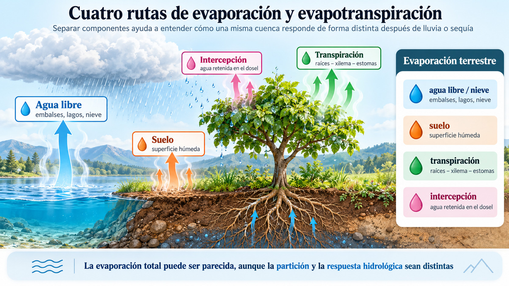
Figura 8.2 Componentes que suelen agregarse como evaporación terrestre. Elaboración propia.
En una aplicación conviene responder cuatro preguntas antes de calcular: qué superficies se incluyen, qué intervalo se integra, qué soporte espacial representa el dato y si el resultado es un flujo real o una demanda potencial. Esta disciplina evita comparar, por ejemplo, evaporación de bandeja con transpiración de una parcela o ET de referencia con pérdida real de una cuenca.
8.2.2. Cambio de fase y requerimiento energético
Las moléculas de un líquido intercambian energía continuamente. Algunas cercanas a la superficie adquieren suficiente energía cinética para superar la atracción del líquido y pasar a la fase gaseosa. Al escapar preferentemente moléculas energéticas, el líquido restante tiende a enfriarse: la evaporación consume calor latente sin que ese consumo implique, durante el cambio de fase, un aumento equivalente de temperatura. La diferencia entre calor latente y sensible y la conservación de energía se relacionan con la primera ley de la termodinámica presentada en Leyes de conservación que rigen el movimiento atmosférico.
La energía requerida por unidad de masa es el calor latente de vaporización, \(\lambda_v\). Cerca de temperaturas ambientales puede aproximarse por:
donde \(T\) está en grados Celsius. A \(20\ ^\circ\mathrm{C}\), \(\lambda_v\) es aproximadamente \(2.45\ \mathrm{MJ\,kg^{-1}}\). Como una lámina de 1 mm sobre 1 m² equivale a 1 kg de agua, un flujo de energía \(\lambda E=2.45\ \mathrm{MJ\,m^{-2}\,d^{-1}}\) representa aproximadamente \(E=1\ \mathrm{mm\,d^{-1}}\). Esta equivalencia convierte un balance energético en profundidad de agua y será usada repetidamente.
La distribución conceptual de la Figura 8.3 explica por qué el calentamiento favorece la evaporación: al aumentar la temperatura, crece la fracción de moléculas en la cola de alta energía. No significa que toda la superficie deba alcanzar el punto de ebullición. La ebullición ocurre cuando la presión de vapor iguala la presión circundante en el interior del líquido; la evaporación ocurre en la interfaz a temperaturas mucho menores.

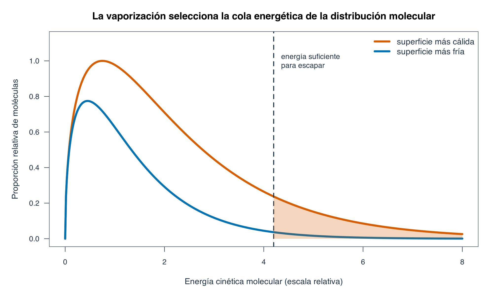
Figura 8.3 Representación conceptual de la fracción de moléculas con energía suficiente para abandonar una superficie líquida. Las curvas están normalizadas y no constituyen una distribución termodinámica calibrada. Elaboración propia.
El proceso es bidireccional. Algunas moléculas de vapor regresan y condensan. En una interfaz en equilibrio, evaporación y condensación se compensan y la presión parcial alcanza la presión de vapor de saturación \(e_s(T_s)\). Si el aire inmediatamente superior contiene una presión de vapor \(e_a\) menor que \(e_s(T_s)\), existe un gradiente que favorece el flujo neto hacia la atmósfera. La dependencia de \(e_s\) con la temperatura se desarrolló mediante Clausius-Clapeyron en Humedad atmosférica y ley de Clausius-Clapeyron. En este capítulo esa ley se usa para obtener el déficit de presión de vapor, no como sustituto del balance de energía.
Para sublimar hielo se requiere más energía que para vaporizar la misma masa de agua líquida a 0 °C. Por ello, bajo igual energía disponible, la pérdida de masa por sublimación es menor. Además, una cubierta de nieve fresca refleja gran parte de la onda corta; este doble efecto reduce el flujo, aunque viento seco y radiación pueden mantener sublimación apreciable en montaña.
8.2.3. Tres requisitos y controles acoplados
Un flujo sostenido necesita tres condiciones. La primera es agua disponible en la superficie o accesible a raíces. La segunda es energía, proporcionada principalmente por radiación neta y, en algunos casos, por calor sensible advectado o por almacenamiento térmico. La tercera es transporte, porque el aire junto a una superficie mojada se aproxima a saturación y el gradiente se debilitaría si turbulencia y viento no renovaran esa capa. Los textos hidrológicos convergen en esta triple estructura, aunque difieren en la notación y en el alcance del término evapotranspiración (Robinson and Ward, 2017; Brutsaert, 1982; Chow et al., 1988; Davie, 2008).
Una forma de representar el control aerodinámico es:
donde \(\rho_a\) y \(\rho_w\) son las densidades del aire y del agua, \(q_s(T_s)\) es la humedad específica de saturación a la temperatura superficial, \(q_a\) la humedad del aire y \(r_a\) una resistencia aerodinámica. Una superficie más rugosa o viento más intenso suelen disminuir \(r_a\); una atmósfera más seca aumenta el gradiente. En vegetación se agrega una resistencia superficial \(r_s\), asociada con estomas, área foliar y disponibilidad de agua.
La Figura 8.4 resume respuestas parciales. Son curvas pedagógicas, no funciones universales: la radiación calienta y seca la capa límite; el viento cambia temperatura y humedad; la vegetación responde al déficit de presión de vapor cerrando estomas; y el agotamiento del suelo reduce simultáneamente transpiración y enfriamiento evaporativo. Por eso, la frase ceteris paribus ayuda a interpretar un control aislado, pero rara vez describe un paisaje real.

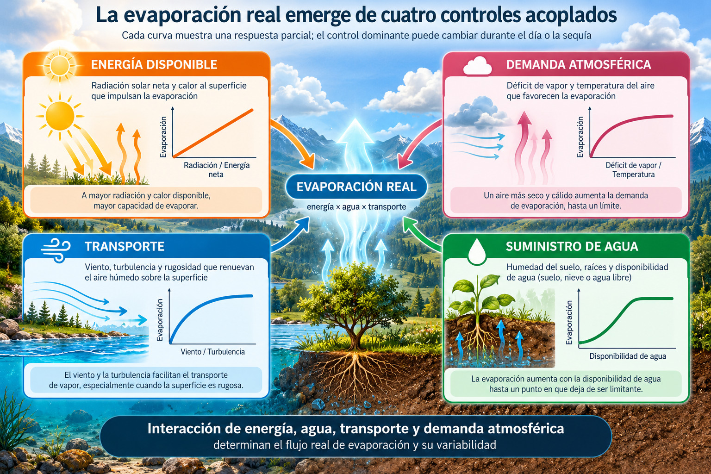
Figura 8.4 Respuesta conceptual de la evaporación a energía, demanda atmosférica, transporte y disponibilidad de agua. Elaboración propia.
La presión atmosférica también interviene porque modifica densidad del aire y constante psicrométrica. La altitud, temperatura y presión fueron relacionadas en Altitud, temperatura del aire y presión atmosférica; no debe concluirse, sin embargo, que la menor presión en altura determina por sí sola una evaporación mayor. En montaña cambian simultáneamente radiación, temperatura, viento, nieve, humedad y exposición.
Demanda no es consumo
La demanda evaporativa describe cuánto podría evaporarse desde una superficie de referencia o bien abastecida. La evaporación real describe el flujo que efectivamente ocurre. Durante una sequía meteorológica la demanda puede aumentar mientras el flujo real disminuye por falta de agua. Confundir ambas variables conduce a diagnósticos erróneos de sequía, riego y cambio climático.
8.3. Fundamentos físicos de la radiación
8.3.1. Espectro electromagnético y leyes de emisión
La radiación electromagnética transfiere energía sin requerir un medio material. Se caracteriza por longitud de onda \(\lambda\), frecuencia \(\nu\) y velocidad \(c=\lambda\nu\). Para hidrología superficial es útil distinguir la radiación solar de onda corta, concentrada aproximadamente entre 0.3 y 4 µm, y la radiación terrestre de onda larga, predominante aproximadamente entre 4 y 100 µm. Esta separación no es arbitraria: se origina en la gran diferencia de temperatura entre el Sol y la Tierra.
La ley de Planck describe la radiancia espectral de un cuerpo negro:
donde \(h\) es la constante de Planck y \(k\) la constante de Boltzmann. La ley de desplazamiento de Wien localiza el máximo:
Para una fotosfera solar cercana a 5772 K, \(\lambda_{\max}\approx0.50\ \mathrm{\mu m}\); para una superficie terrestre cercana a 288 K, \(\lambda_{\max}\approx10\ \mathrm{\mu m}\). La Figura 8.5 hace visible la separación de los espectros. Las curvas se normalizan de manera independiente: no comparan la magnitud absoluta recibida en la Tierra.

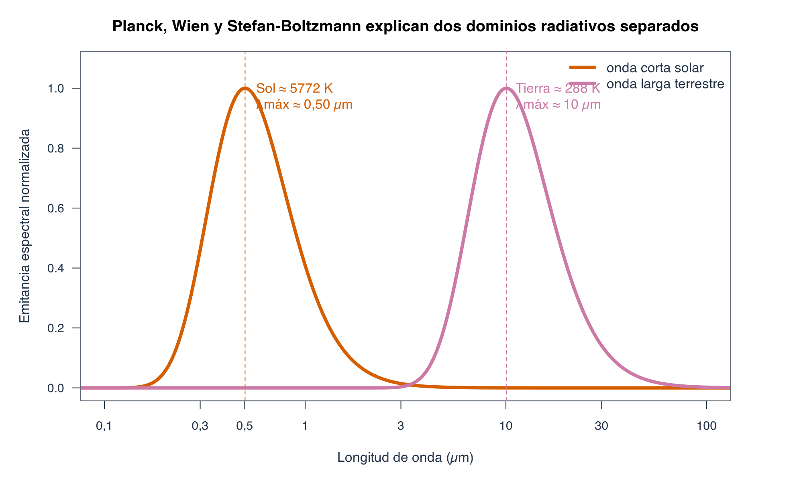
Figura 8.5 Emitancia espectral normalizada de cuerpos negros a temperaturas representativas del Sol y la Tierra. Elaboración propia a partir de la ley de Planck.
Al integrar el espectro se obtiene la ley de Stefan-Boltzmann:
donde \(\sigma=5.670374419\times10^{-8}\ \mathrm{W\,m^{-2}\,K^{-4}}\) y \(\varepsilon\) es la emisividad. La cuarta potencia hace que pequeños cambios de temperatura absoluta alteren apreciablemente la emisión de onda larga. Una superficie real no es un cuerpo negro perfecto; agua, suelo y vegetación suelen poseer emisividades térmicas altas, pero no idénticas.
Estas tres leyes cumplen papeles distintos. Planck distribuye la emisión entre longitudes de onda; Wien identifica el máximo; Stefan-Boltzmann entrega la emisión total. Aplicarlas con grados Celsius en lugar de kelvin es un error dimensional grave. En hidrología, su consecuencia práctica es que la onda corta entrante depende principalmente de geometría solar y atmósfera, mientras la onda larga saliente depende fuertemente de temperatura y emisividad superficial (Wallace and Hobbs, 2006; Stephens et al., 2012).
8.3.2. Geometría solar y radiación extraterrestre
La irradiancia solar total a la distancia media Tierra-Sol es cercana a \(1361\ \mathrm{W\,m^{-2}}\); el valor moderno es menor que el usado en varias formulaciones históricas (Kopp and Lean, 2011). Esa magnitud corresponde a una superficie perpendicular a los rayos fuera de la atmósfera. La energía recibida por una superficie horizontal depende de la proyección cosenoidal, de la duración del día y de la distancia orbital. Por ello, la latitud y la estación –factores climáticos introducidos en Principales factores que determinan el clima– regulan la oferta potencial de energía.
Para un día \(J\), la formulación diaria usada habitualmente en hidrología agrícola expresa la radiación extraterrestre \(R_a\) como (Allen et al., 1998):
con
donde \(G_{sc}=0.0820\ \mathrm{MJ\,m^{-2}\,min^{-1}}\), \(\varphi\) es latitud en radianes, \(d_r\) la distancia relativa inversa Tierra-Sol, \(\delta\) la declinación solar y \(\omega_s\) el ángulo horario de puesta del Sol. \(R_a\) no es la radiación que alcanza la superficie: representa la cota geométrica antes de reflexión y absorción atmosférica.
La Figura 8.6 muestra el patrón de \(R_a\). Cerca del ecuador la variación anual es moderada; en latitudes medias del hemisferio sur, el máximo ocurre alrededor de diciembre-enero y el mínimo alrededor de junio-julio. A mayor latitud aumenta la amplitud estacional. Este patrón ayuda a explicar por qué dos cuencas con igual precipitación anual pueden tener demandas evaporativas muy diferentes, y por qué la coincidencia o desfase entre lluvia y energía importa.

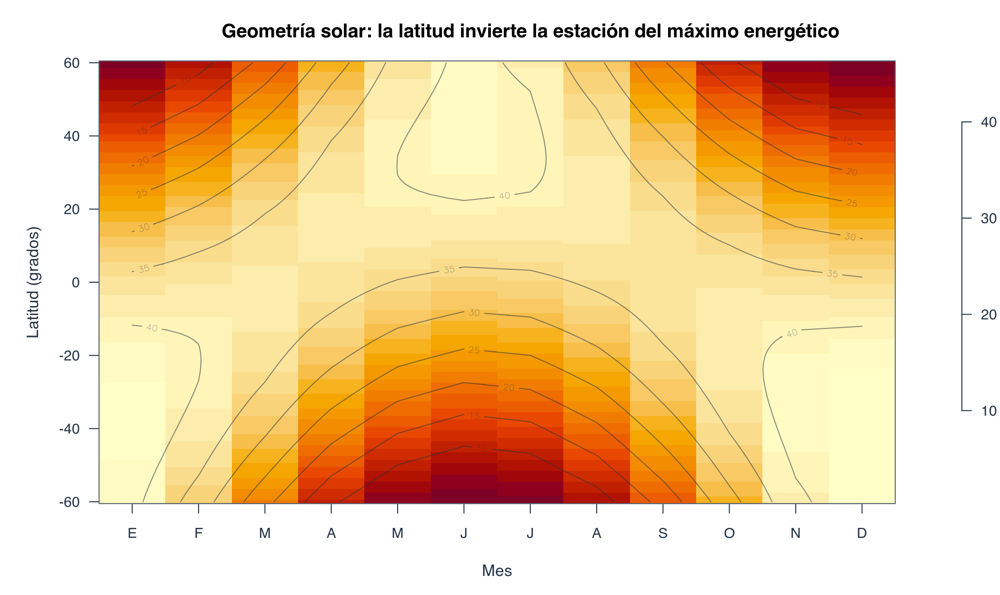
Figura 8.6 Radiación extraterrestre diaria media para distintas latitudes y meses, calculada con la geometría de FAO-56. Elaboración propia.
La topografía modifica el resultado para una ladera: pendiente y orientación cambian el ángulo de incidencia, y el horizonte puede ocultar el Sol. El mecanismo se conecta con la influencia topográfica desarrollada en Influencia de la topografía. En una cuenca andina, una grilla horizontal de radiación puede sobrestimar una ladera sombreada y subestimar una ladera orientada al norte durante parte del año. La corrección requiere modelo de elevación, posición solar y sombras; una simple relación con altitud no basta.
8.3.3. Transmisión atmosférica y onda corta superficial
Antes de alcanzar la superficie, la radiación solar es dispersada, reflejada y absorbida. Las nubes constituyen un control dominante pero variable; aerosoles dispersan y absorben; ozono absorbe principalmente ultravioleta; vapor de agua y otros gases absorben en bandas selectivas. La composición y estructura de la atmósfera se introdujeron en Capas de la atmósfera. Aquí interesa su efecto integrado sobre el flujo de onda corta.
La radiación global \(R_s\) sobre una superficie horizontal combina un componente directo, que conserva la dirección del Sol, y uno difuso, que llega después de dispersión. En cielo despejado, \(R_s\) se aproxima a una fracción alta de \(R_a\); bajo nubosidad espesa puede caer de forma abrupta. Un modelo simple relaciona horas de sol \(n\) con duración máxima \(N\):
donde \(a_s\) y \(b_s\) deben calibrarse o elegirse de acuerdo con la región. Si no hay observación de radiación, la amplitud térmica diaria puede utilizarse como proxy en formulaciones empíricas, pero nubes, advección y continentalidad limitan su transferencia (Allen et al., 1998; Hargreaves and Samani, 1985).
Las Figuras 8.7a y 8.7b presentan el balance global mediante dos representaciones complementarias. La Figura 8.7a normaliza la radiación solar entrante a 100 unidades y permite seguir visualmente la partición entre reflexión, absorción, emisión infrarroja, calor latente y calor sensible. La Figura 8.7b expresa los flujos medios globales anuales en \(\mathrm{W\,m^{-2}}\) y hace explícito el pequeño desequilibrio energético planetario. La normalización facilita comparar fracciones; los valores dimensionales permiten calcular balances. Ninguna de las dos representaciones entrega coeficientes transferibles a una estación. A escala local, una nube puede simultáneamente reducir onda corta y aumentar onda larga descendente; un aerosol puede alterar radiación directa y difusa; y una cubierta de nieve eleva la reflexión superficial (Stephens et al., 2012).

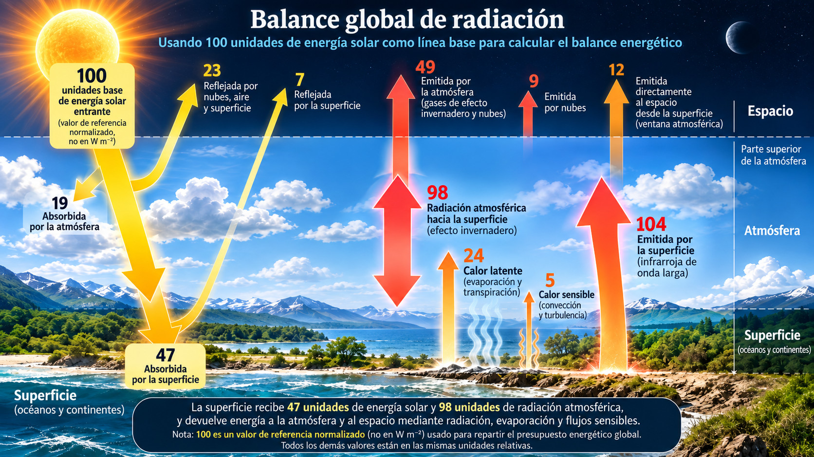
Figura 8.7 Balance global de radiación y flujos de energía expresado sobre una base normalizada de 100 unidades de energía solar entrante. Los valores son relativos y no están expresados en \(\mathrm{W\,m^{-2}}\). Elaboración propia.

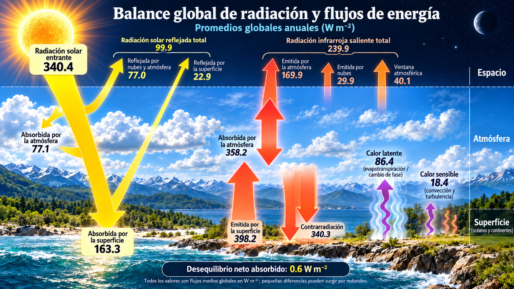
Figura 8.8 Balance global anual de radiación y flujos de energía expresado en \(\mathrm{W\,m^{-2}}\). La diferencia neta absorbida representa el desequilibrio energético planetario; pequeñas discrepancias adicionales pueden provenir del redondeo. Elaboración propia.
La onda corta neta es:
donde \(\alpha\) es el albedo. Agua profunda con Sol alto puede tener albedo bajo; nieve fresca, mucho mayor; suelo y vegetación ocupan valores intermedios que cambian con humedad, estructura y ángulo solar. El albedo no es una propiedad completamente fija: una superficie acuática refleja más con incidencia rasante, un dosel cambia con fenología y un suelo se oscurece al mojarse. En términos hidrológicos, esas variaciones cambian la energía que queda disponible para calor sensible y latente.
8.3.4. Onda larga, albedo y radiación neta
La superficie emite onda larga de acuerdo con \(\varepsilon_s\sigma T_s^4\). La atmósfera también emite hacia abajo porque vapor de agua, nubes y gases de efecto invernadero absorben y reemiten radiación infrarroja. La radiación neta superficial reúne los cuatro flujos:
Con la convención usada aquí, los flujos hacia la superficie son positivos. Durante el día, la onda corta neta suele dominar y \(R_n\) es positivo. De noche \(K_\downarrow=0\) y la emisión terrestre puede superar la contrarradiación atmosférica, produciendo \(R_n<0\) y enfriamiento superficial. Nubes bajas reducen onda corta diurna, pero aumentan onda larga descendente y moderan el enfriamiento nocturno.
Cuando no existe radiómetro neto, FAO-56 estima la onda larga neta diaria mediante temperatura, presión de vapor y nubosidad relativa (Allen et al., 1998):
y luego \(R_n=R_{ns}-R_{nl}\). En esta formulación diaria, \(\sigma\) se expresa en unidades coherentes de \(\mathrm{MJ\,K^{-4}\,m^{-2}\,d^{-1}}\), \(e_a\) en kPa y \(R_{so}\) es radiación de cielo despejado. La ecuación es una parametrización, no una medición directa de temperatura de superficie o emisividad.
La Figura 8.9 compara dos balances ilustrativos. El cielo nublado reduce \(K_\downarrow\), pero aumenta \(L_\downarrow\); el resultado neto depende de ambos cambios. Esta compensación explica por qué no puede inferirse \(R_n\) sólo desde insolación, ni evaporación sólo desde temperatura del aire.

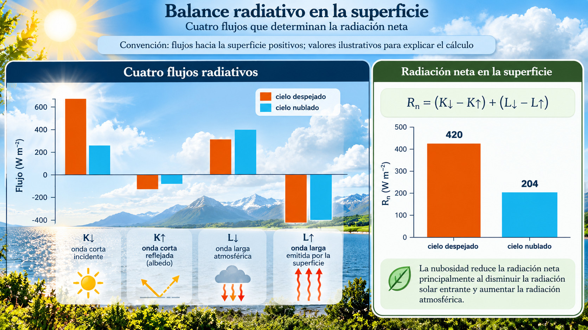
Figura 8.9 Componentes de radiación neta con la convención hacia la superficie positiva. Los valores son ilustrativos y no corresponden a una estación específica. Elaboración propia.
La medición ideal utiliza un radiómetro neto o un conjunto de piranómetros y pirgeómetros orientados hacia arriba y abajo. El sensor debe estar nivelado, ventilado cuando corresponda y situado sobre una superficie representativa. Sombras, suciedad, condensación, inclinación y una huella superficial heterogénea producen errores. En un embalse, además, la temperatura del agua y el almacenamiento de calor pueden desacoplar radiación instantánea y evaporación (World Meteorological Organization, 2008; Chow et al., 1988).
Ejemplo razonado de cambio de cubierta. Considérese un día con \(R_s=24\ \mathrm{MJ\,m^{-2}\,d^{-1}}\). Sobre una cubierta oscura con \(\alpha=0.18\), la onda corta neta es \(19.68\ \mathrm{MJ\,m^{-2}\,d^{-1}}\). Si la pérdida de onda larga neta es \(4.8\ \mathrm{MJ\,m^{-2}\,d^{-1}}\), entonces \(R_n=14.88\ \mathrm{MJ\,m^{-2}\,d^{-1}}\). Sobre nieve con \(\alpha=0.75\), manteniendo los demás términos sólo para aislar el efecto del albedo, \(R_{ns}\) cae a 6.0 y \(R_n\) a \(1.2\ \mathrm{MJ\,m^{-2}\,d^{-1}}\). Dividir esos valores por \(\lambda_v=2.45\ \mathrm{MJ\,kg^{-1}}\) entrega equivalentes energéticos de 6.07 y 0.49 mm por día, respectivamente. No son predicciones de evaporación: son cotas que suponen que toda la energía neta se destina al cambio de fase y omiten \(H\), \(G\) y almacenamiento. El ejercicio cuantifica, sin embargo, por qué una modificación de albedo puede alterar fuertemente la energía disponible.
La comparación también muestra un principio de atribución. Si después de una nevada disminuye ET, no basta observar que bajó la temperatura del aire: aumentó el albedo, cambió la rugosidad, apareció energía de fusión y el agua quedó temporalmente almacenada como nieve. Para separar mecanismos se necesitan los términos del balance, no una correlación bivariada. En sentido inverso, retirar una cubierta clara o humedecer un suelo oscuro puede elevar la absorción de onda corta, pero ET sólo responderá si existe agua accesible y si la atmósfera permite exportar vapor.
Ejemplo razonado de nubosidad. Si el mismo suelo recibe \(R_s=12\ \mathrm{MJ\,m^{-2}\,d^{-1}}\) bajo nubes y la pérdida de onda larga neta baja a \(2.8\ \mathrm{MJ\,m^{-2}\,d^{-1}}\), se obtiene \(R_n=7.04\ \mathrm{MJ\,m^{-2}\,d^{-1}}\). La onda corta incidente se redujo a la mitad, pero la radiación neta no lo hizo en la misma proporción porque las nubes compensaron parte de la pérdida mediante onda larga descendente. Esta compensación es más importante de noche y en atmósferas húmedas. Por ello, trasladar una relación calibrada entre insolación y ET desde un valle costero nuboso hacia una cuenca continental seca puede introducir un sesgo sistemático. La contabilidad de cuatro componentes presentada en la Figura 8.9 es una defensa directa frente a esa simplificación.
8.4. Balance de energía en la superficie
8.4.1. Flujos sensible, latente y del suelo
La radiación neta no se convierte íntegramente en evaporación. Para una capa superficial de control, el balance puede escribirse como:
donde \(G\) es el flujo de calor hacia el suelo o el agua, \(S\) representa el cambio de energía almacenada en biomasa, agua o la capa considerada, \(H\) es el calor sensible transferido al aire y \(\lambda E\) el calor latente. La convención debe declararse: aquí \(R_n>0\) aporta energía y \(H>0\), \(\lambda E>0\) representan flujos desde la superficie hacia la atmósfera. En escalas diarias sobre suelo, \(G\) puede ser pequeño respecto de \(R_n\); en escalas horarias o sobre lagos profundos no siempre lo es.
El calor sensible cambia la temperatura del aire sin cambiar su fase. El calor latente transporta energía asociada con vapor de agua. La partición suele resumirse mediante la razón de Bowen:
o mediante la fracción evaporativa:
Una superficie húmeda y bien abastecida suele presentar \(EF\) alta y \(\beta\) baja; una superficie seca, lo contrario. La Figura 8.10 muestra dos particiones posibles para el mismo \(R_n\). El ejemplo demuestra que radiación neta es una condición energética, no una predicción única de \(E\).

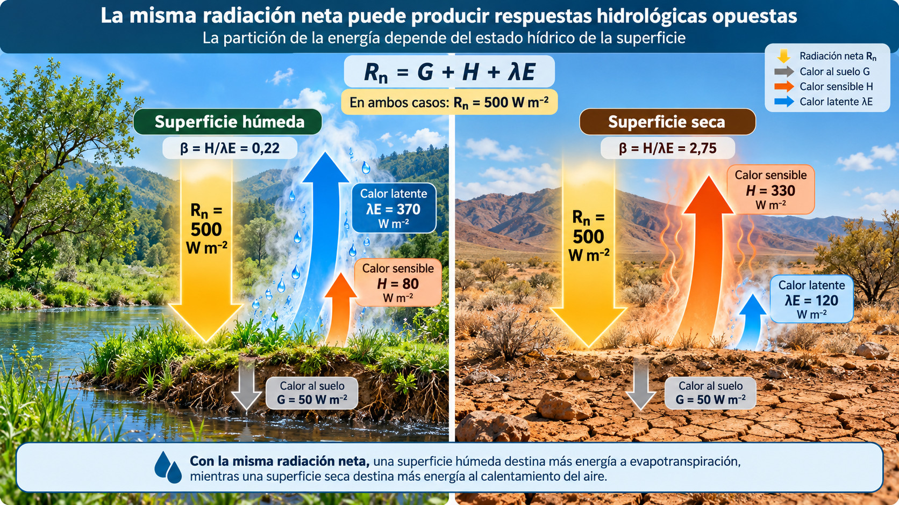
Figura 8.10 Partición ilustrativa de una misma radiación neta sobre superficies húmeda y seca. Elaboración propia.
Si \(R_n-G-S=500\ \mathrm{W\,m^{-2}}\), una superficie húmeda podría destinar 370 a \(\lambda E\) y 80 a \(H\); una seca, 120 y 330, respectivamente. Al dividir por \(\lambda_v\), \(370\ \mathrm{W\,m^{-2}}\) sostenidos una hora equivalen aproximadamente a \(0.54\ \mathrm{mm}\). Mantener 370 \(\mathrm{W\,m^{-2}}\) durante 24 horas no es realista si el ciclo nocturno no se considera; para acumulaciones diarias debe integrarse el flujo observado a lo largo del tiempo.
El cierre medido rara vez es perfecto. En torres de covarianza de remolinos es común que \(H+\lambda E\) no iguale exactamente \(R_n-G-S\) por errores instrumentales, falta de representatividad espacial, almacenamiento no medido, advección horizontal o remolinos de baja frecuencia. Forzar el cierre sin documentar el método redistribuye el residuo entre \(H\) y \(\lambda E\) y puede cambiar la estimación de agua.
8.4.2. Resistencias, advección y retroalimentación
La superficie y la atmósfera forman un sistema acoplado. La evaporación enfría y humedece la capa límite; al disminuir el déficit de presión de vapor, puede reducir la demanda posterior. Si el suelo se seca, aumenta \(H\), la superficie se calienta y la capa límite se vuelve más cálida y seca, lo que eleva la demanda potencial aunque el flujo real esté restringido. Esta retroalimentación ayuda a entender por qué evaporación potencial y real no son forzantes independientes.
La analogía de resistencias separa el transporte atmosférico de la regulación superficial. Una forma general de Penman-Monteith es (World Meteorological Organization, 2008; Monteith, 1965):
donde \(\Delta\) es la pendiente de la curva de presión de vapor de saturación, \(D=e_s-e_a\) el déficit de presión de vapor, \(\gamma\) la constante psicrométrica, \(c_p\) el calor específico del aire, \(r_a\) la resistencia aerodinámica y \(r_s\) la resistencia superficial. Para agua libre \(r_s\) se aproxima a cero; para vegetación integra resistencia estomática y estructura del dosel; para suelo seco aumenta al limitarse el transporte interno de agua.
El primer término del numerador expresa el control radiativo y el segundo el poder secante y turbulento de la atmósfera. La ecuación elimina la necesidad de medir directamente la temperatura superficial idealizada que aparecía en formulaciones puramente aerodinámicas. Su elegancia no elimina las exigencias de datos: una altura incorrecta de viento, una humedad no representativa o una resistencia superficial mal parametrizada pueden dominar el error.
La advección agrega energía horizontal. En la Figura 8.11, aire cálido y seco generado sobre una superficie árida alcanza una parcela húmeda. Allí el calor sensible importado puede transformarse en calor latente, de modo que \(\lambda E\) exceda localmente \(R_n-G\). No viola conservación de energía: el término faltante es convergencia horizontal de calor. El efecto oasis, bordes de embalses y cultivos irrigados en ambientes secos son ejemplos.

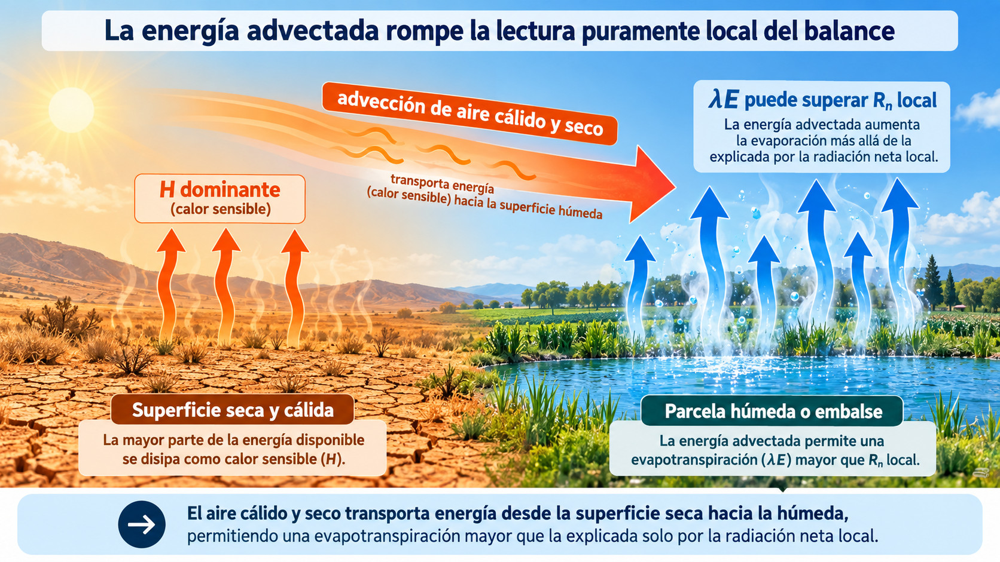
Figura 8.11 Transporte advectivo de energía desde una superficie seca hacia una superficie húmeda. Elaboración propia.
La escala es crucial. En una hoja, la capa límite y los estomas controlan; en un dosel, rugosidad y área foliar; en una cuenca, mosaicos de cobertura, circulación regional y almacenamiento. Al aumentar el área, parte de la advección entre parches se convierte en intercambio interno y el balance externo cambia. Por eso no se debe extrapolar linealmente una medición de parcela a toda una cuenca heterogénea (Robinson and Ward, 2017; Shuttleworth and Wallace, 1985).
8.5. Distribución temporal y espacial
8.5.1. Ciclos diurno, estacional e interanual
En un día despejado, la onda corta aumenta tras el amanecer, alcanza un máximo alrededor del mediodía solar y cae al atardecer. La temperatura superficial, \(H\) y \(\lambda E\) responden con desfases determinados por almacenamiento y resistencias. Durante la noche \(R_n\) suele ser negativo; la evaporación puede continuar si el agua almacena calor o si existe turbulencia y aire seco, pero generalmente a una tasa menor. En condiciones de rocío, el flujo de vapor puede invertirse y \(E\) ser negativo con la convención adoptada.
La Figura 8.12 compara el ciclo horario con un ciclo anual conceptual. La estacionalidad aumenta hacia latitudes medias porque cambian altura solar y duración del día. En Chile central, la demanda energética es alta en verano, precisamente cuando la precipitación es baja; en zonas con lluvia estival, agua y energía pueden coincidir. Los Regímenes hidrológicos integran este calendario con nieve, almacenamiento y escorrentía.

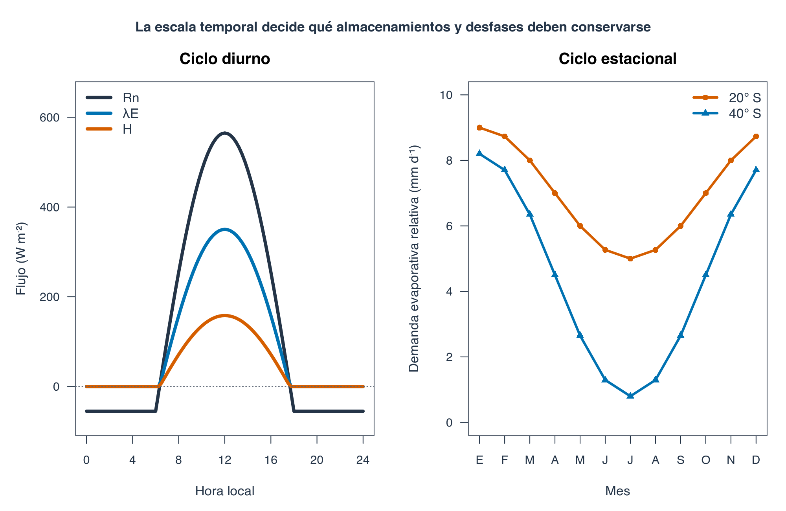
Figura 8.12 Ciclos conceptuales diario de flujos energéticos y estacional de demanda evaporativa en dos latitudes del hemisferio sur. Elaboración propia.
En escala interanual, evaporación responde a anomalías de radiación, precipitación, humedad, viento, vegetación y reservas. Un año cálido puede aumentar ET en una región húmeda y reducirla en una región donde el suelo se agota antes. La variabilidad atmosférica de gran escala presentada en Oscilaciones climáticas de gran escala puede cambiar nubosidad, secuencias de lluvia y advección, alterando tanto oferta de agua como energía.
La agregación temporal suaviza mecanismos. El promedio mensual puede ocultar pulsos de evaporación de intercepción después de cada tormenta; el promedio anual puede ocultar un desfase de seis meses entre lluvia y energía. Para modelos diarios se necesita almacenamiento explícito; para Budyko de largo plazo puede ser razonable despreciar el cambio neto de almacenamiento, pero no sin verificarlo.
Una práctica recomendable es separar estado y flujo. Humedad del suelo, nieve y nivel de embalse son estados; evaporación, precipitación y caudal son flujos. Integrar un flujo en el tiempo produce volumen o lámina. Restar estados sin considerar su fecha produce balances falsos. Esta distinción retoma las leyes de conservación de Leyes de conservación que rigen el movimiento atmosférico y las aplica al control superficial.
8.5.2. Latitud, topografía, cobertura y agua disponible
Los patrones espaciales surgen de cadenas causales. La latitud y la estación controlan \(R_a\); nubes y aerosoles controlan transmisión; albedo y temperatura superficial controlan radiación neta; viento, rugosidad y humedad controlan transporte; suelo, raíces y cuerpos de agua controlan suministro. La Figura 8.13 ordena esos vínculos y muestra por qué un mismo factor puede actuar en varias rutas.

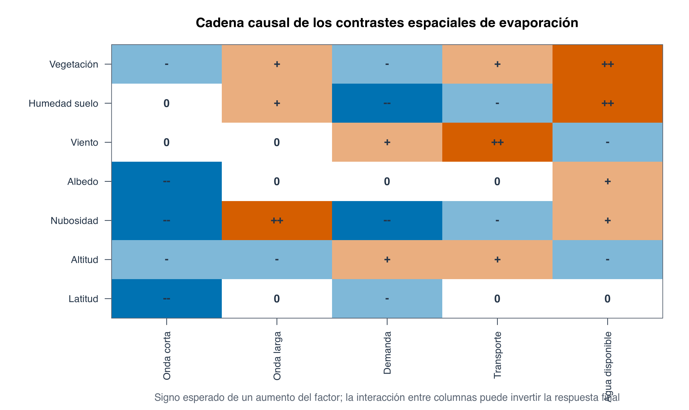
Figura 8.13 Signo conceptual de los principales vínculos entre factores geográficos y controles de evaporación. Elaboración propia.
La altitud puede aumentar la radiación solar recibida por menor masa atmosférica, pero también reducir temperatura y presión de vapor de saturación; además suele modificar viento, nubosidad, nieve y vegetación. La orientación de laderas controla irradiación y deshielo; el relieve también canaliza el viento y genera sombras. Estas interacciones fueron introducidas en Influencia de la topografía y se aplican aquí a energía y transporte.
La cobertura cambia albedo, rugosidad, resistencia superficial y acceso al agua. Un bosque puede transpirar agua desde mayor profundidad, interceptar lluvia y mantener una capa límite distinta de un pastizal. No se sigue que todo bosque evapore siempre más: clima, especie, edad, manejo, agua del suelo y escala determinan el resultado. Un área urbana reemplaza suelo y vegetación por superficies impermeables que almacenan calor; puede reducir transpiración local y aumentar temperatura, pero riego urbano y pérdidas de redes complican el balance.
El suelo controla infiltración, almacenamiento y ascenso capilar. Después de mojarse, la evaporación de suelo puede ocurrir cerca de la tasa potencial; al secarse la capa superficial, el transporte interno pasa a limitar y la tasa declina. Textura, estructura, profundidad y cobertura de residuos modifican la duración de ambas etapas. En zonas salinas, la menor actividad del agua y la formación de costras agregan resistencias.
Los cuerpos de agua aseguran suministro superficial, pero su profundidad y mezcla almacenan energía. Un lago puede evaporar intensamente después del máximo de radiación estacional porque libera calor acumulado. Un embalse estrecho recibe advección de sus bordes; uno grande modifica la capa límite. En nieve y glaciares, el albedo, la energía de fusión y la sublimación introducen controles diferentes. Por ello, un único mapa de ET no debe interpretarse como si todos los píxeles representaran el mismo proceso.
8.5.3. Demanda atmosférica, sequía y cambio climático
El calentamiento aumenta la presión de vapor de saturación de acuerdo con Humedad atmosférica y ley de Clausius-Clapeyron. Si la humedad real no aumenta en la misma proporción, crece el déficit de presión de vapor y la demanda atmosférica. También pueden cambiar radiación, viento, nubosidad, precipitación, nieve, vegetación y concentración de CO₂. El efecto neto sobre evaporación real es regional y dependiente del agua disponible (Masson-Delmotte et al., 2021).
La Figura 8.14 distingue tres curvas. La demanda potencial aumenta con déficit de presión de vapor. Una superficie húmeda puede responder con mayor flujo. Un suelo que se seca puede alcanzar un máximo y luego disminuir porque raíces y estomas limitan. Esta divergencia es central para interpretar sequías: una atmósfera más demandante agrava el estrés aunque la ET observada termine bajando.

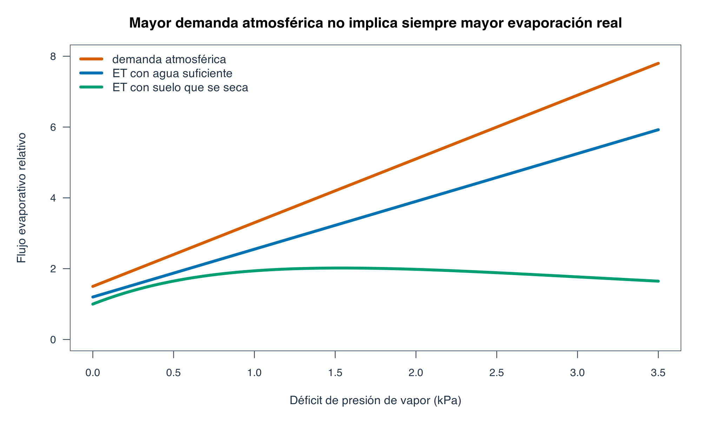
Figura 8.14 Respuestas conceptuales de demanda atmosférica y evaporación real al déficit de presión de vapor. Elaboración propia.
El concepto de aridez requiere especificar índice y período. La razón \(ET_0/P\) compara demanda y oferta climática; humedad del suelo incorpora almacenamiento; déficit de precipitación describe sólo entrada; y un índice basado en temperatura puede exagerar cambios si no representa radiación, viento y humedad. El El climograma: síntesis visual del clima ayuda a visualizar la estacionalidad conjunta de temperatura y precipitación, pero no reemplaza el balance de energía.
El aumento de CO₂ puede mejorar eficiencia de uso de agua y reducir conductancia estomática en ciertas plantas, mientras el calentamiento y una estación de crecimiento más larga pueden aumentar demanda. Cambios de cobertura, incendios, riego y extracción de agua se superponen al forzamiento climático. Por ello, atribuir un cambio de caudal exclusivamente a temperatura a partir de una fórmula empírica de ET potencial es insuficiente.
Para diseño y gestión se recomienda trabajar con escenarios de P, radiación, humedad y viento, además de temperatura; comparar más de una formulación de demanda; y propagar diferencias hacia balance hídrico. La incertidumbre de ET real debe comunicarse separando forzantes, parámetros, estructura del método y observaciones de validación.
8.6. Medición y estimación de la evaporación
8.6.1. Instrumentos directos y soporte espacial
No existe un instrumento único que mida la evaporación de una cuenca completa. Cada técnica integra un soporte. Un lisímetro mide cambios de masa o balance de agua en un volumen de suelo con vegetación; una bandeja mide pérdida de agua desde un recipiente; covarianza de remolinos estima flujos turbulentos sobre una huella variable; un balance de cuenca infiere el residuo espacial; y sensores remotos observan variables radiativas o térmicas desde las que se estima el flujo.
La Figura 8.15 muestra órdenes de magnitud. Los rangos se superponen y dependen de instalación, altura, viento, resolución y heterogeneidad. La comparación correcta no enfrenta valores puntuales con píxeles o cuencas sin agregación espacial y temporal compatible.

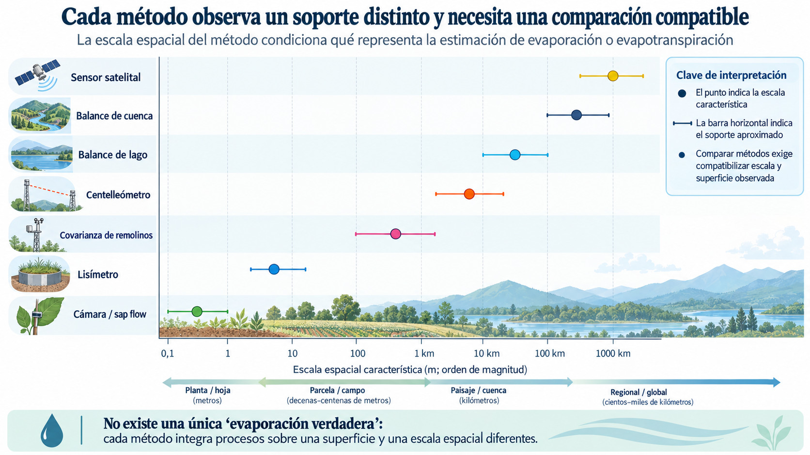
Figura 8.15 Escalas espaciales características de métodos de medición o inferencia de evaporación. Son órdenes de magnitud orientativos. Elaboración propia.
Las bandejas de evaporación son simples, pero no reproducen un lago: sus paredes intercambian calor, la profundidad es pequeña y el agua responde rápidamente. Se usa \(E_{lago}=K_pE_{pan}\), con un coeficiente que varía con clima, viento, exposición y tipo de bandeja. Un valor cercano a 0.7 puede servir como primera aproximación, nunca como constante universal. La WMO recomienda la bandeja Clase A como referencia operacional y especifica emplazamiento, medición de nivel, lluvia y variables meteorológicas (World Meteorological Organization, 2008).
Los lisímetros de pesada permiten alta precisión y son valiosos para cultivos, pero son caros y pueden sufrir efecto de borde o diferencias respecto del suelo circundante. Los lisímetros de drenaje cierran entradas, salidas y almacenamiento en períodos más largos. En ambos casos, la vegetación y el perfil deben representar el entorno. Para un volumen de control sin escorrentía lateral, el balance básico es:
donde \(I\) es riego, \(D\) drenaje profundo y \(\Delta S\) cambio de agua almacenada. Un lisímetro de pesada obtiene \(\Delta S\) desde masa; uno de drenaje necesita medir o estimar el almacenamiento. La ecuación muestra por qué llamarlo medición directa no elimina la necesidad de controlar precipitación, riego, drenaje, condensación y representatividad.
La covarianza de remolinos calcula el flujo turbulento a partir de la covarianza entre fluctuaciones de velocidad vertical y vapor de agua. Entrega series subhorarias sobre una huella que cambia con estabilidad y viento. Requiere correcciones, control de calidad, llenado de vacíos y evaluación del cierre de energía (Baldocchi, 2003). Cámaras y flujo de savia separan componentes o individuos, pero necesitan escalamiento. Un centelleómetro integra turbulencia sobre trayectorias de cientos de metros a kilómetros y puede inferir \(H\), dejando \(\lambda E\) como residuo del balance.
8.6.2. Métodos de energía, aerodinámicos y de combinación
Los métodos energéticos convierten energía disponible en evaporación; los aerodinámicos usan gradientes de humedad y transporte; los métodos de combinación integran ambos. Penman mostró que era posible estimar evaporación sin conocer explícitamente la temperatura superficial combinando balance de energía y difusión turbulenta (Penman, 1948). Monteith incorporó resistencias de superficie y atmósfera para vegetación (Monteith, 1965).
La ecuación diaria FAO Penman-Monteith para una superficie de referencia es (Allen et al., 1998):
donde \(ET_0\) está en mm por día, \(R_n\) y \(G\) en MJ por metro cuadrado y día, \(T\) en °C, \(u_2\) es viento a 2 m y \(e_s-e_a\) en kPa. La superficie de referencia es un cultivo hipotético corto, bien regado y con características normalizadas. Por tanto, \(ET_0\) es una demanda de referencia, no ET real de cualquier cobertura.
Conviene separar cuatro magnitudes que suelen confundirse:
ET potencial, ETP: tasa que podría sostener una superficie idealmente abastecida bajo la meteorología considerada; su definición depende del método y de la superficie implícita.
ET de referencia, \(ET_0\): demanda sobre la superficie estandarizada de FAO, calculada para comparar clima y transferir coeficientes.
ET de cultivo, \(ET_c=K_cET_0\): demanda de un cultivo sano en condiciones estándar; \(K_c\) representa desarrollo, arquitectura y fracción de suelo expuesto.
ET real o ajustada: flujo bajo las condiciones efectivas de agua y manejo. En riego suele aproximarse como \(ET_{c,adj}=K_sK_cET_0\), con \(0\leq K_s\leq1\) como coeficiente de estrés hídrico (Allen et al., 1998).
La desigualdad \(ET_{real}\leq ETP\) es una guía útil cuando ambas variables describen la misma superficie, intervalo y definición. No debe aplicarse comparando, por ejemplo, ET real de una cuenca irrigada con \(ET_0\) de una estación distante, ni ignorando advección o agua importada. El subíndice es parte del significado físico, no una decoración de la variable.
La Figura 8.16 separa los términos. La contribución radiativa aumenta con \(R_n-G\); la aerodinámica aumenta con déficit de presión de vapor y viento. Si faltan humedad o viento, una fórmula basada sólo en temperatura puede reproducir climatología local pero perder eventos, cambios de circulación o comparabilidad entre regiones.

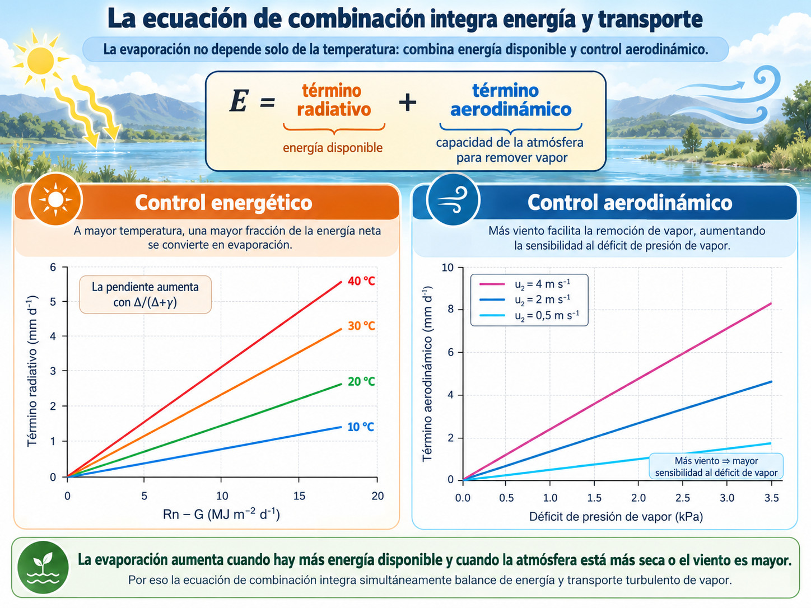
Figura 8.16 Sensibilidad de los términos radiativo y aerodinámico en una formulación tipo FAO Penman-Monteith. Elaboración propia.
Para superficies extensas y húmedas con advección limitada, Priestley-Taylor aproxima:
con \(\alpha_{PT}\approx1.26\) como valor clásico (Priestley and Taylor, 1972). Su simplicidad no autoriza aplicarla a superficies secas o fuertemente advectadas sin evaluación. Para vegetación dispersa, el modelo Shuttleworth-Wallace separa suelo y dosel y combina redes de resistencias (Shuttleworth and Wallace, 1985).
Los métodos empíricos reducen los requerimientos de datos, pero sus unidades y escala temporal deben respetarse literalmente. Una forma diaria de Turc combina temperatura, radiación y humedad relativa:
con \(R_s\) en \(\mathrm{cal\,cm^{-2}\,d^{-1}}\) en esta versión y \(HR\) en porcentaje; existen variantes para condiciones húmedas y otras unidades (Turc, 1961). La ecuación no debe recibir directamente radiación en MJ sin convertir coeficientes.
Thornthwaite usa temperatura media mensual y duración astronómica del día:
donde \(N\) es la duración máxima media del día, \(d\) los días del mes y el índice térmico se calcula con meses de \(T_m>0\); para meses más fríos se toma nula la contribución térmica (Thornthwaite, 1948). Como no usa humedad, viento ni radiación observada, puede producir sesgos importantes fuera del clima donde temperatura y energía covarían de manera semejante.
Hargreaves-Samani introduce radiación extraterrestre y amplitud térmica diaria:
con \(R_a\) expresada como lámina equivalente de agua (Hargreaves and Samani, 1985). Es útil cuando sólo existen temperaturas máxima y mínima, pero la amplitud térmica también responde a nubosidad, humedad, advección y continentalidad. Turc, Thornthwaite y Hargreaves-Samani deben calibrarse o contrastarse con Penman-Monteith antes de transferirse entre la costa, el valle central, la cordillera o la Patagonia. Su parsimonia es una ventaja operacional y una limitación física: la temperatura o amplitud térmica funcionan como proxies, no como causas únicas de evaporación.
8.6.3. Productos globales de evaporación
Los conjuntos globales permiten describir patrones espaciales, completar regiones sin observaciones y aportar una variable de contraste para balances o modelos hidrológicos. Sin embargo, ningún satélite mide directamente la evaporación. Los sensores observan temperatura superficial, radiancias, albedo, humedad del suelo, nieve o vegetación; luego un algoritmo combina esas observaciones con meteorología y parámetros de superficie. Los reanálisis tampoco son observaciones directas: calculan los flujos con un modelo de superficie forzado por un estado atmosférico asimilado. Finalmente, los productos empíricos aprenden relaciones a partir de torres de flujo y las extrapolan con predictores satelitales o meteorológicos. Esta distinción explica por qué productos igualmente plausibles pueden diferir en magnitud, estacionalidad y tendencia (Baris and Tombul, 2024; Kalma et al., 2008; Wang and Dickinson, 2012).
Una clasificación útil separa productos diagnósticos, que infieren el flujo a partir del estado instantáneo de la superficie –por ejemplo, temperatura radiométrica o verdor–, de productos pronósticos, que actualizan reservas de agua y calculan la evaporación como resultado de un modelo. GLEAM es un híbrido orientado específicamente a evaporación, mientras ERA5-Land, MERRA-2 y GLDAS producen el flujo dentro de un sistema de superficie terrestre más amplio. FLUXCOM representa otra familia: extrapola observaciones de covarianza de remolinos mediante aprendizaje automático. La resolución del píxel no identifica por sí sola la escala efectiva, pues una imagen de 500 m puede estar condicionada por forzantes meteorológicas mucho más gruesas (Dembélé et al., 2020).
La Tabla 8.1 resume productos de acceso abierto o ampliamente accesibles con cobertura global o casi global. Las fechas y resoluciones corresponden a las versiones citadas; los portales pueden extender el período o reemplazar una colección. Por ello, todo análisis reproducible debe registrar nombre completo, versión, fecha de descarga, variable, unidades y controles de calidad.
Producto |
Familia y fundamento |
Resolución y período nominal |
Variables útiles |
Uso hidrológico y precaución principal |
|---|---|---|---|---|
GLEAM4 |
Modelo híbrido basado en Priestley-Taylor, balance de agua y observaciones satelitales; el estrés evaporativo se aprende de torres y flujo de savia. |
0.1°, diaria; 1980–2023 en la versión descrita y actualización cercana al presente. |
Evaporación total; transpiración; intercepción; evaporación de suelo, agua y nieve; humedad del suelo; evaporación potencial y estrés. |
Adecuado para partición y sequías. Sus componentes siguen siendo resultados de modelo y comparten forzantes (Miralles et al., 2025). |
MOD16 v6.1 |
Colecciones MOD16A2GF y MOD16A3GF; Penman-Monteith con vegetación, albedo y cobertura MODIS más meteorología de reanálisis. |
500 m; 8 días y anual; era MODIS desde 2000, con colección operacional y colección rellenada al cierre de cada año. |
ET, flujo de calor latente, ET potencial, flujo latente potencial y banderas de calidad. |
Útil para heterogeneidad de cobertura. La resolución nominal no elimina dependencia de meteorología gruesa, nubes ni clasificación del terreno (Mu et al., 2011). |
PML-V2 |
Penman-Monteith-Leuning acoplado con productividad primaria bruta y conductancia del dosel. |
500 m, 8 días; julio de 2002–2017 en el producto original. |
ET total; transpiración; evaporación de suelo e intercepción; productividad primaria bruta. |
Conveniente para estudiar acoplamiento agua-carbono. Su serie original es más corta que los reanálisis y depende de MODIS y GLDAS (Zhang et al., 2019). |
SSEBop global |
Balance energético diagnóstico basado en temperatura superficial y límites térmicos |
1 km; decádica, mensual, estacional y anual; desde 2012 en la versión operacional global v6. |
ET real y anomalías. |
Útil para seguimiento de sequía y consumo agrícola. La nubosidad, la calidad de temperatura superficial y la ET de referencia controlan el resultado (Senay et al., 2013). |
FLUXCOM |
Aprendizaje automático que escala torres FLUXNET con sensores remotos y, según la configuración, meteorología. |
RS: 0.0833°, 8 días, 2001–2015; RS+METEO: 0.5°, diaria y período dependiente del forzante desde aproximadamente 1980. |
Radiación neta, calor latente y sensible, miembros y dispersión del ensamble. |
Valioso para contrastar energía y explorar incertidumbre estructural. Hereda la distribución desigual de torres y el problema de cierre energético (Jung et al., 2019). |
ERA5-Land / MERRA-2 / GLDAS-2.x |
Reanálisis o asimilación terrestre; la evaporación surge del balance de agua y energía del modelo de superficie. |
ERA5-Land: 0.1°, horaria, 1950–presente; MERRA-2: 0.5° × 0.625°, horaria, 1980–presente; GLDAS-2.x: 0.25°, 3 horas y período dependiente de la versión. |
ET total o calor latente, componentes de superficie, humedad del suelo, nieve y numerosas forzantes coherentes. |
Series continuas y convenientes para modelación. No son una validación independiente cuando el modelo usa el mismo forzante; revisar signo y acumulación (Gelaro et al., 2017; Muñoz-Sabater et al., 2021; Rodell et al., 2004). |
ET armonizada REA |
Ensamble por promedio de fiabilidad de ERA5, MERRA-2 y GLDAS-2, usando GLEAM y torres como referencias. |
0.25°, diaria; 1980–2017. |
Evaporación terrestre total y medida de fiabilidad del ensamble. |
Reduce discrepancias entre modelos para climatologías y tendencias, pero los miembros no son independientes y el período es fijo (Lu et al., 2021). |
La tabla no establece una jerarquía universal. En la cuenca del Volta, por ejemplo, el desempeño de doce productos cambió con la zona climática, la variable de evaluación y la estrategia de calibración; un producto que mejoró el patrón espacial de humedad del suelo no necesariamente mejoró el caudal. Ese resultado impide transformar un ranking regional en recomendación global y muestra que calibrar sólo con el promedio de ET desperdicia parte de la información espacial (Dembélé et al., 2020). Del mismo modo, combinar productos no garantiza independencia: ERA5-Land, MOD16, PML-V2 y GLEAM pueden compartir radiación, precipitación o meteorología de reanálisis, de modo que su acuerdo puede reflejar entradas comunes.
La selección debe comenzar por el mensurando. Para cierre anual de cuenca interesa ET terrestre total; para riego, una resolución subkilométrica y representación de advección y agua aplicada; para sequía, continuidad temporal y respuesta al estrés; y para ecohidrología, separación entre transpiración, suelo e intercepción. Debe comprobarse si agua libre, nieve, humedales, ciudades o cultivos irrigados están incluidos o enmascarados. Cuando el producto entrega \(\lambda E\) en \(\mathrm{W\,m^{-2}}\), la conversión a lámina exige integrar el tiempo y usar el calor latente coherente con la temperatura, siguiendo el balance desarrollado en Balance de energía en la superficie. En reanálisis también debe verificarse la convención: algunos sistemas almacenan la evaporación como flujo hacia arriba con signo negativo o como acumulación reiniciada durante el ciclo de pronóstico.
Para aplicaciones hidrológicas se recomienda comparar al menos dos familias estructuralmente distintas, conservar las banderas de calidad, agregar todos los productos al mismo calendario y soporte, y evaluar tanto volumen como patrón temporal y espacial. La referencia local debe ser compatible: torres para dinámica de alta frecuencia, balances \(P-Q-\Delta S\) para volúmenes de cuenca y lisímetros para parcelas. La dispersión entre productos es una primera aproximación a incertidumbre estructural, no un intervalo probabilístico; la ausencia de una verdad global observada y el soporte desigual de las validaciones siguen siendo limitaciones centrales (Baris and Tombul, 2024; Kalma et al., 2008; Lu et al., 2021; Wang and Dickinson, 2012).
8.6.4. Balances, teledetección e integración de evidencias
En una cuenca, el balance de agua general es:
donde \(I_{sup}\) e \(I_{sub}\) son entradas superficiales y subterráneas, \(O_{sub}\) salidas subterráneas y \(\Delta S\) el cambio de almacenamiento. Si la cuenca coincide con divisorias subterráneas, no hay transferencias, el período es largo y \(\Delta S\approx0\), entonces \(ET\approx P-Q\). La simplificación es poderosa precisamente porque acumula en ET todos los errores de P, Q y supuestos de cierre. La WMO recomienda revisar geología y seleccionar períodos en que el cambio de almacenamiento sea pequeño (World Meteorological Organization, 2008).
En un lago se agregan entradas y salidas, precipitación directa, cambio de nivel, infiltración y almacenamiento térmico. Para períodos cortos, pequeños errores de nivel o caudal pueden ser mayores que la evaporación residual. El balance de energía del lago requiere radiación, calor almacenado y posibles aportes advectivos; la profundidad hace que el máximo de evaporación pueda retrasarse respecto del máximo solar.
La teledetección no observa directamente el flujo de vapor. Mide radiancia reflejada y emitida, de la que se derivan albedo, temperatura superficial, vegetación y radiación; un modelo cierra el balance de energía o impone una relación evaporativa. Los productos de Productos globales de evaporación aprovechan esa cobertura espacial, pero mantienen limitaciones por nubes, frecuencia de revisita, escala del píxel, forzantes y parametrización. Validar sólo contra una torre puntual puede confundir diferencia de soporte con error del producto (Robinson and Ward, 2017; Fisher et al., 2017; Kalma et al., 2008).
La Figura 8.17 usa series sintéticas para ilustrar la integración. Una bandeja sin coeficiente sobrestima sistemáticamente; un producto satelital alterna errores; un balance hídrico suaviza. La coincidencia parcial entre métodos independientes aumenta confianza, mientras desacuerdos estructurados ayudan a localizar el problema.

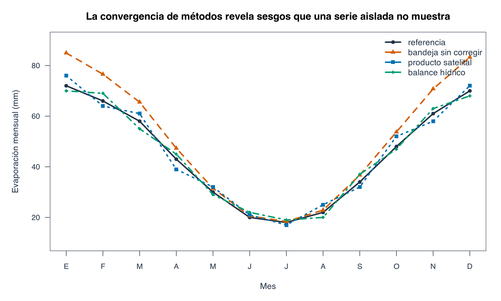
Figura 8.17 Comparación sintética de métodos con sesgos y soportes diferentes. Elaboración propia.
Una validación defendible incluye: unidades y signos; período común; agregación al mismo soporte; cierre de balances; incertidumbre de forzantes; datos independientes; y análisis por estación y condición de humedad. No basta una correlación alta: se requieren sesgo, error absoluto, conservación de volumen y capacidad de representar extremos o sequías según la aplicación.
El primer paso es definir con precisión el mensurando. ET diaria de una parcela regada, evaporación mensual de un embalse y ET anual media de una cuenca no son versiones intercambiables de una sola variable: cambian superficie, período, procesos incluidos y soporte espacial. Una torre integra una huella que varía con estabilidad y viento; un píxel satelital mezcla cubiertas; una bandeja representa agua libre expuesta; y un balance residual integra toda la cuenca. Antes de comparar números se deben armonizar calendario, área, convención de signos y definición de ET. Esta jerarquía de soportes es el sentido operativo de la Figura 8.17.
El segundo paso es propagar incertidumbre en lugar de tratar una estimación residual como observación exacta. Supóngase una cuenca sin transferencias conocidas, con \(P=900\ \mathrm{mm}\) y \(Q=280\ \mathrm{mm}\) en un año. El residuo es \(ET=620\ \mathrm{mm}\). Si las incertidumbres estándar son 45 mm en P y 14 mm en Q, y se consideran independientes, la incertidumbre de ET es aproximadamente \(\sqrt{45^2+14^2}=47\ \mathrm{mm}\). Al incluir 30 mm de incertidumbre asociada con \(\Delta S\), aumenta a cerca de 56 mm. El resultado debería informarse entonces como una estimación cercana a 620 mm con un orden de incertidumbre de 56 mm, no como 620 mm exactos. Si P y Q comparten fuentes de error o si el año fue seleccionado por sequía, la independencia tampoco puede asumirse automáticamente.
El tercer paso es buscar evidencia verdaderamente independiente. Un producto satelital de 600 ± 50 mm se superpone con el intervalo del balance y apoya la plausibilidad, pero no demuestra exactitud: ambos pueden compartir la misma radiación de reanálisis o la misma precipitación. Una torre aporta física de alta frecuencia, aunque su huella puede no representar la cuenca. El cierre energético de la torre, la representatividad de las coberturas y la fracción de días interpolados deben acompañar la comparación. Del mismo modo, una buena correlación mensual puede coexistir con un sesgo anual que invalida el balance de recursos hídricos (Baldocchi, 2003; Fisher et al., 2017; Rodell et al., 2015).
Finalmente, la discrepancia debe convertirse en diagnóstico. Un sesgo que crece con el déficit de presión de vapor sugiere revisar resistencias o humedad del suelo; uno concentrado en días nublados apunta a radiación o temperatura superficial; uno que cambia con el viento puede revelar advección o exposición de instrumentos. Diferencias persistentes entre laderas señalan topografía, mientras una diferencia anual sin patrón meteorológico obliga a revisar P, Q, transferencias y almacenamiento. La integración no consiste en promediar métodos: consiste en usar sus contrastes para someter a prueba el modelo conceptual de la cuenca, tal como recomiendan los enfoques de balance y observación multifuente (Robinson and Ward, 2017; World Meteorological Organization, 2008).
8.7. Marco de Budyko: balance de agua y energía
8.7.1. Hipótesis, índices y límites físicos
El marco de Budyko pregunta qué fracción de la precipitación media de largo plazo retorna a la atmósfera y qué fracción queda como escorrentía. Su fuerza proviene de reducir muchos procesos a dos restricciones universales: no se puede evaporar más agua que la disponible y no puede sostenerse el cambio de fase sin energía. La formulación no reproduce una tormenta ni reemplaza un modelo continuo; describe la partición hidroclimática media de una cuenca aproximadamente cerrada (Budyko, 1974; Sposito, 2017).
El balance de agua es:
donde \(T_w\) reúne transferencias netas de agua a través de la divisoria o usos no representados. Al promediar un período suficientemente largo y verificar \(\overline{\Delta S}\approx0\) y \(\overline{T_w}\approx0\):
El balance de energía, también promediado, relaciona radiación neta con calor latente y sensible. Se introduce una evaporación potencial o demanda \(ET_0\) como escala energética-climática. El símbolo no garantiza que sea idéntico a ET de referencia FAO; una serie de Penman-Monteith, evaporación de bandeja corregida o energía equivalente \(R_n/\lambda\) representa demandas distintas. Toda aplicación debe documentar la definición.
Dos cocientes adimensionales organizan el espacio:
\(\phi\) es el índice de aridez y \(\varepsilon\) el índice evaporativo. Si \(\phi\ll1\), hay agua abundante respecto de energía y \(ET\) tiende a \(ET_0\), por lo que \(\varepsilon\to\phi\). Si \(\phi\gg1\), la energía potencial abunda pero el agua limita, \(ET\) tiende a \(P\) y \(\varepsilon\to1\). La Figura 8.18 muestra ambos límites.

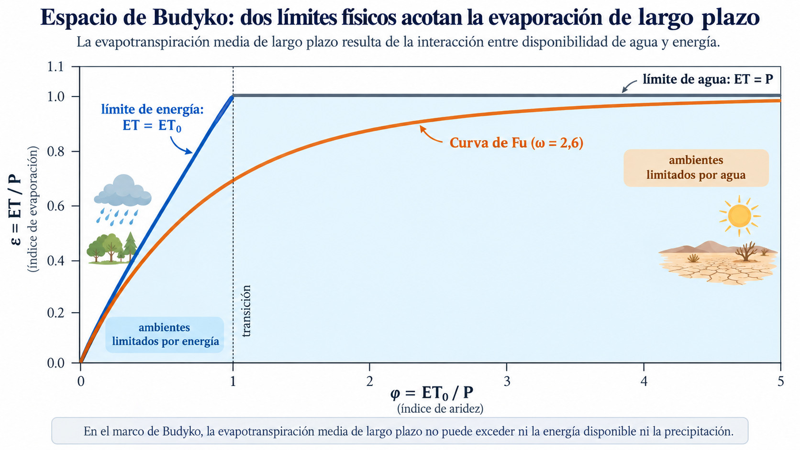
Figura 8.18 Límites de agua y energía en el espacio de Budyko, con una curva de Fu ilustrativa. Elaboración propia.
La región físicamente admisible satisface \(ET\leq P\) y, en la idealización, \(ET\lesssim ET_0\). Un punto por encima del límite de agua no prueba inmediatamente un error: puede indicar importación subterránea, riego con agua externa, agotamiento de almacenamiento o inconsistencia de datos. Un punto aparentemente por encima del límite de energía puede reflejar advección, una definición inadecuada de \(ET_0\) o sesgo. El gráfico es una herramienta diagnóstica, no un tribunal que sustituya el balance.
La escala temporal importa. Roderick and Farquhar (2011) utiliza promedios climáticos y enfatiza que cambios de almacenamiento deben ser pequeños frente a \(P\), \(ET\) y \(Q\). Usar la curva en meses individuales suele fallar porque nieve, suelo, acuíferos y embalses transfieren agua entre períodos. La escala espacial también importa: cuencas pequeñas o intervenidas exhiben mayores efectos de almacenamiento, transferencias y heterogeneidad (Donohue et al., 2007).
8.7.2. Familias de curvas y ecuación de Fu
Una función de Budyko debe aproximarse al límite energético cuando \(\phi\to0\) y al límite hídrico cuando \(\phi\to\infty\). Varias expresiones satisfacen esas condiciones. Entre las formas clásicas se encuentran:
La Figura 8.19 compara esas curvas con una forma paramétrica. Las diferencias son pequeñas cerca de los límites y mayores alrededor de \(\phi\approx1\), precisamente donde agua y energía tienen magnitudes comparables. La elección de ecuación afecta ET y, por residuo, Q. Debe tratarse como incertidumbre estructural, no ocultarse detrás de un ajuste visual (Pike, 1964; Zhang et al., 2004).

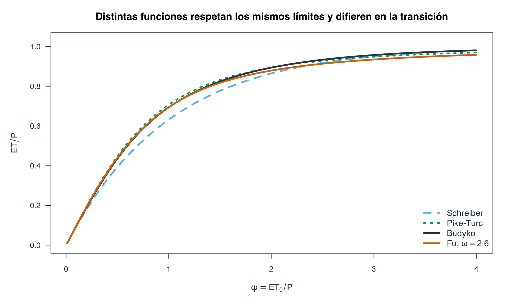
Figura 8.19 Comparación de relaciones clásicas que satisfacen los límites de Budyko. Elaboración propia.
La ecuación de Fu es muy utilizada:
Con \(P\), \(ET_0\) y \(\omega\), se estima ET y luego \(Q=P-ET\). El parámetro \(\omega\) controla la curvatura. Valores mayores elevan \(ET/P\) para un mismo \(\phi\); valores cercanos a 1 acercan la curva al origen. La formulación fue desarrollada mediante consideraciones sobre la respuesta de ET a incrementos de precipitación y demanda, y ha sido relacionada con otras familias paramétricas (Fu, 1981; Yang et al., 2008; Zhang et al., 2004).
Un valor global por defecto puede servir en una demostración, pero no reemplaza calibración o evidencia regional. Zhang et al. (2004) encontró que la aridez explica gran parte de la variación media anual, mientras tormentas, almacenamiento disponible y cobertura ayudan a explicar desviaciones. Como Q suele ser el residuo más pequeño en ambientes secos, una diferencia modesta en \(ET/P\) puede convertirse en una diferencia relativa grande de caudal.
La comparación también exige consistencia en \(ET_0\). Sustituir una PET de Thornthwaite por FAO Penman-Monteith cambia \(\phi\) y puede cambiar el parámetro ajustado; \(\omega\) deja entonces de ser comparable. Un modelo no debe recalibrarse para absorber cambios de definición sin reconocerlos.
8.7.3. Interpretación del parámetro omega y desviaciones
La Figura 8.20 muestra que \(\omega\) desplaza la curva, sobre todo en climas de transición. Es tentador asignarle una causa única –por ejemplo, bosque o profundidad de suelo–, pero el parámetro integra múltiples efectos: capacidad de almacenamiento, acceso radicular, estacionalidad de lluvia y radiación, características de tormentas, topografía, nieve, conectividad subterránea y manejo. Dos cuencas pueden compartir \(\omega\) por combinaciones diferentes.

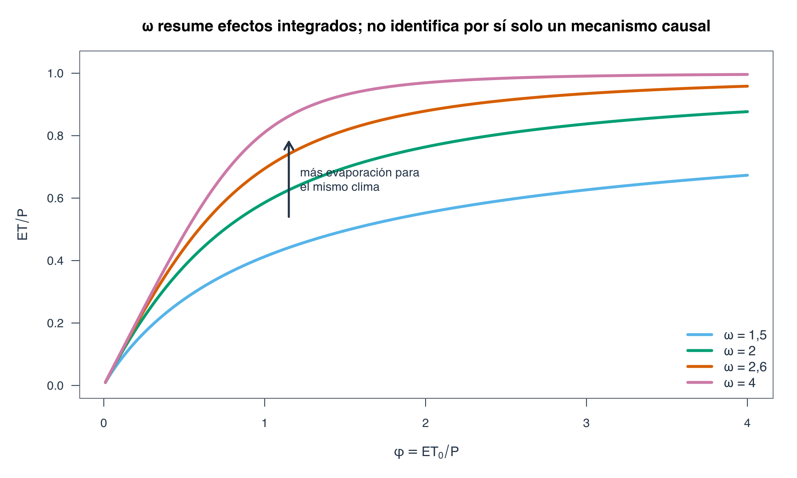
Figura 8.20 Efecto del parámetro \(\omega\) sobre la curva de Fu. Elaboración propia.
La vegetación es simultáneamente control y respuesta. Raíces profundas, área foliar y regulación estomática alteran ET; pero esos rasgos también se adaptan al régimen de agua y energía. Gentine et al. (2012) muestra que suelo, vegetación y clima no son variables independientes y que el desfase estacional favorece estrategias de almacenamiento y raíces profundas. Williams et al. (2012) encuentra que clima explica el patrón de primer orden, mientras bioma y estacionalidad explican desviaciones adicionales.
Una desviación vertical respecto de una curva puede deberse a:
almacenamiento no estacionario, como agotamiento de acuífero o recuperación después de sequía;
transferencia subterránea o superficial a través de la divisoria topográfica;
nieve y glaciares, que desplazan agua entre años o aportan pérdida de masa;
intervención, como riego, embalses, exportación, retorno o cambio de cobertura;
sesgos de P, Q o ET₀, en especial subcaptación de nieve y precipitación orográfica;
escala insuficiente, donde la variabilidad anual y el almacenamiento no se promedian; o
estructura funcional, porque la curva elegida no representa la región.
Calibrar \(\omega\) a partir de \(ET=P-Q\) transfiere al parámetro todo error de cierre. Por eso se recomienda informar el intervalo de datos, la definición de año hidrológico, cobertura de estaciones, transferencias, incertidumbre de Q y sensibilidad a ET₀. Una estimación independiente de ET mediante torre, satélite o balance energético puede revelar compensación de errores.
Para comparar períodos, no basta observar que \(\omega\) cambió. Un cambio en \(P\) o \(ET_0\) mueve el punto a lo largo o entre curvas; un cambio en almacenamiento puede simular cambio de propiedad; y la vegetación puede responder gradualmente. La atribución requiere una narrativa causal respaldada por cobertura, suelo, uso de agua y observaciones.
8.7.4. Elasticidad, cambio climático y aplicaciones
El marco permite estimar sensibilidad de escorrentía a pequeños cambios. Si \(Q=P-ET(P,ET_0,\omega)\), una expansión de primer orden es:
Los coeficientes dependen del estado inicial. En una cuenca seca, Q es una fracción pequeña de P; una variación moderada de P puede producir una variación porcentual grande de Q. La Figura 8.21 ilustra este efecto para una cuenca sintética. Un aumento de precipitación eleva Q; un aumento de demanda, manteniendo lo demás, reduce Q. Las curvas no son simétricas porque la relación es no lineal.

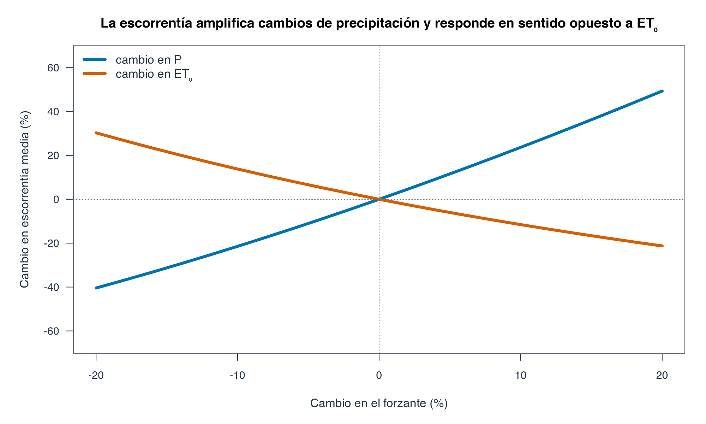
Figura 8.21 Sensibilidad de escorrentía de una cuenca sintética a cambios de precipitación y demanda en una relación de Fu. Elaboración propia.
Roderick and Farquhar (2011) formaliza coeficientes de sensibilidad para separar cambios asociados con \(P\), demanda y propiedades de cuenca. La separación es útil, pero no convierte los factores en independientes. Precipitación, radiación, humedad y viento pueden covariar; cobertura cambia en respuesta al clima; y \(\omega\) puede compensar errores. La suma de contribuciones depende del período base y de la linealización.
Aplicaciones hidrológicas frecuentes incluyen:
regionalización de ET y Q en cuencas con datos limitados;
prueba de plausibilidad para balances hidroclimáticos;
evaluación de escenarios de precipitación y demanda;
atribución exploratoria de cambios de caudal a clima y superficie;
comparación de modelos respecto de límites de agua y energía; y
clasificación ecohidrológica de cuencas.
No es adecuado para estimar caudal de crecida, operación diaria de embalses, riego semanal o ET de una tormenta. Tampoco debe aplicarse mecánicamente donde P no sea la única fuente de agua, donde Q observado esté fuertemente regulado o donde el almacenamiento cambie persistentemente. En esas condiciones se amplía el balance o se emplea un modelo dinámico.
Para cambio climático, el flujo mínimo de trabajo es: definir períodos comparables; calcular \(P\) y \(ET_0\) con método consistente; verificar cambios de almacenamiento y uso; estimar posición y movimiento en espacio Budyko; evaluar más de una curva o rango de \(\omega\); y contrastar con simulación continua. El resultado debe presentarse como escenario condicionado, no como predicción determinista.
8.8. Ejemplo de aplicación anual
8.8.1. Cálculo paso a paso
Considérese una cuenca de Chile central con precipitación mensual \(P_m\) y demanda de referencia \(ET_{0,m}\) representadas en la Figura 8.22. Los datos son sintéticos, pero reproducen un régimen con precipitación invernal y demanda estival. Antes de sumar se comprueba que ambas series cubren el mismo año hidrológico, tienen unidades de milímetros sobre la cuenca y no contienen meses faltantes.

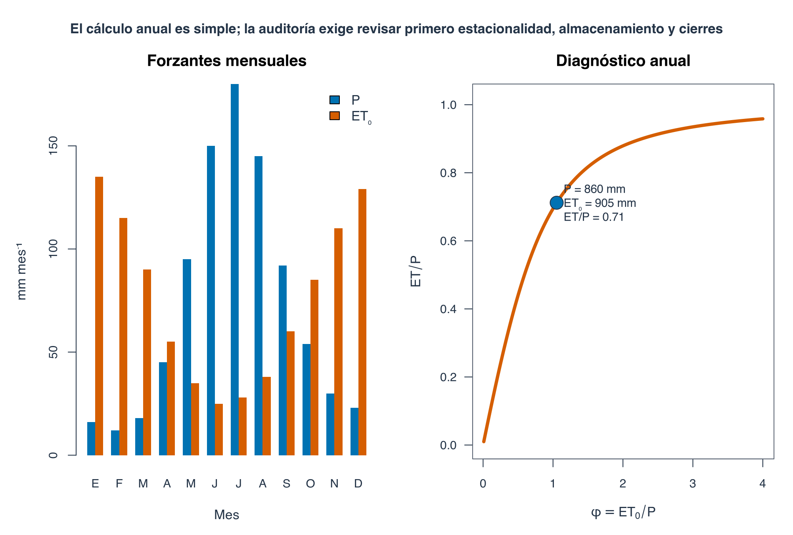
Figura 8.22 Forzantes mensuales sintéticos y diagnóstico anual con la ecuación de Fu. Elaboración propia.
Los totales son:
Por tanto:
Con \(\omega=2.6\):
Así:
Para un área de \(250\ \mathrm{km^2}\), la lámina de Q equivale a:
El caudal medio equivalente es aproximadamente \(1.97\ \mathrm{m^3\,s^{-1}}\). Esta conversión no entrega estacionalidad ni extremos. Si el aforo observado promedia \(260\ \mathrm{mm\,a^{-1}}\), el balance residual da \(ET=600\ \mathrm{mm\,a^{-1}}\); la diferencia de 12 mm respecto de Fu es pequeña comparada con errores plausibles de P y Q, pero debe cuantificarse.
El cálculo de \(\omega\) no debería iniciarse antes de auditar cierre. Se revisa precipitación orográfica, cambio de almacenamiento, captaciones, retornos y divisoria subterránea. Luego se propaga incertidumbre. Por ejemplo, un sesgo de ±5 % en P cambia tanto el numerador de \(ET=P-Q\) como \(\phi\); el efecto sobre Q puede superar ±5 %.
Finalmente, se compara con otra relación de Budyko y con ET independiente. Si Pike-Turc, Fu y balance hídrico convergen, el resultado es robusto en escala anual. Si difieren, el objetivo no es promediarlos ciegamente, sino identificar si la discrepancia proviene de función, parámetro, demanda o datos.
8.8.2. Estacionalidad, almacenamiento y prueba de supuestos
Dos cuencas pueden tener los mismos totales anuales de P y \(ET_0\), y por tanto el mismo \(\phi\), pero calendarios opuestos. En la Figura 8.23, la cuenca izquierda recibe agua cuando la energía es alta; la derecha, cuando la energía es baja. Si no existiera almacenamiento, la primera podría evaporar más. En la segunda, suelo profundo, nieve o acuífero deben transferir agua hacia la estación energética para sostener ET.

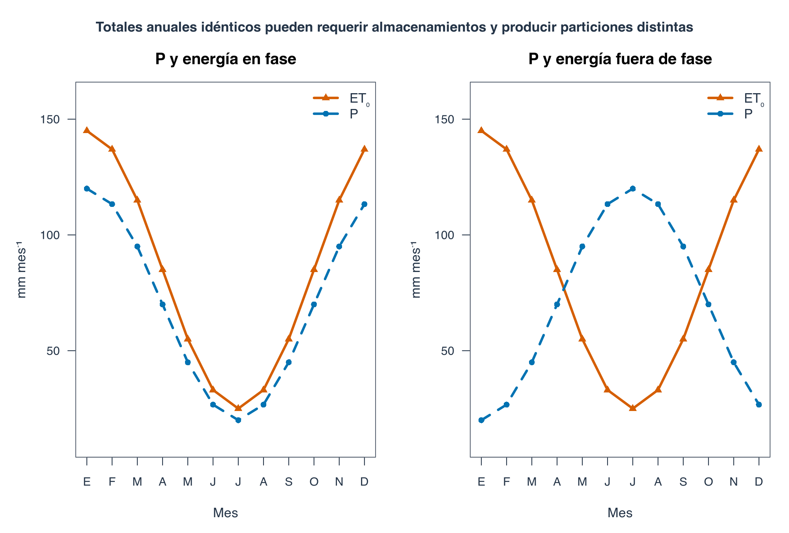
Figura 8.23 Dos regímenes sintéticos con totales anuales iguales y diferente fase entre precipitación y demanda. Elaboración propia.
El ejemplo explica por qué el promedio anual no contiene toda la física. Budyko puede representar una partición de primer orden, mientras \(\omega\) absorbe parte del efecto de estacionalidad y almacenamiento. Pero si se proyecta un cambio en el calendario de lluvias sin cambiar el total anual, una aplicación que usa sólo \(\phi\) no lo detectará. Para esa pregunta se requiere un modelo mensual o diario con almacenamiento.
Una prueba práctica de supuestos incluye:
Duración: usar al menos varios años y preferir normales de largo plazo cuando se busca relación climática. La distinción entre tiempo y clima se desarrolló en Tiempo atmosférico y clima.
Cierre: cuantificar entradas y salidas distintas de P y Q; comparar divisorias topográfica y subterránea.
Almacenamiento: revisar tendencias de agua subterránea, nieve, glaciares, embalses y humedad del suelo.
Consistencia: mantener método y datos de \(ET_0\) entre cuencas y períodos.
Intervención: naturalizar caudales cuando sea posible o incorporar extracciones y retornos.
Estacionalidad: calcular desfase entre P y energía y evaluar si cambió.
Incertidumbre: propagar errores de P, Q y demanda antes de interpretar \(\omega\).
Si un supuesto falla, la respuesta robusta no es descartar siempre Budyko. Puede ampliarse el balance con transferencia y almacenamiento, segmentar períodos casi estacionarios o usar el marco sólo como diagnóstico. Lo incorrecto es presentar la curva como explicación causal completa.
8.9. Síntesis y guía de aplicación
La evaporación enlaza balances de agua y energía. A escala molecular requiere calor latente; a escala de superficie depende de radiación neta, transporte y suministro; a escala de cuenca compite con escorrentía por la precipitación disponible. Planck, Wien y Stefan-Boltzmann explican la separación espectral y la emisión; la geometría solar fija la oferta extraterrestre; atmósfera, albedo y temperatura transforman esa oferta en radiación neta.
El balance superficial distribuye \(R_n-G-S\) entre \(H\) y \(\lambda E\). Una superficie húmeda favorece calor latente; una seca, calor sensible. Viento y déficit de presión de vapor sostienen transporte, mientras resistencias de suelo y vegetación regulan el flujo. Advección, almacenamiento y heterogeneidad impiden interpretar toda evaporación como una fracción local fija de radiación.
La observación es necesariamente multiescala. Bandejas, lisímetros, torres, centelleómetros, balances y satélites responden preguntas distintas. Los métodos de combinación representan mejor energía y aerodinámica cuando existen datos; los empíricos son útiles si se reconocen sus límites. La integración de evidencias es más confiable que una única serie sin auditoría.
Budyko resume la partición media de largo plazo mediante aridez \(ET_0/P\), índice evaporativo \(ET/P\) y límites de agua y energía. La ecuación de Fu añade flexibilidad con \(\omega\), pero ese parámetro es agregado, no mecanismo único. Cambios de almacenamiento, transferencias, estacionalidad, intervención o sesgos pueden desplazar una cuenca. El marco es excelente para hipótesis, regionalización y sensibilidad; no es un modelo de eventos.
La Figura 8.24 resume una secuencia de trabajo. Primero se define variable, escala y superficie; luego se cierran balances; se seleccionan método y datos; se verifica soporte y sesgo; finalmente se comunica incertidumbre. En escala corta dominan balance de energía y transporte. En largo plazo, balance hídrico y Budyko aportan una síntesis complementaria.

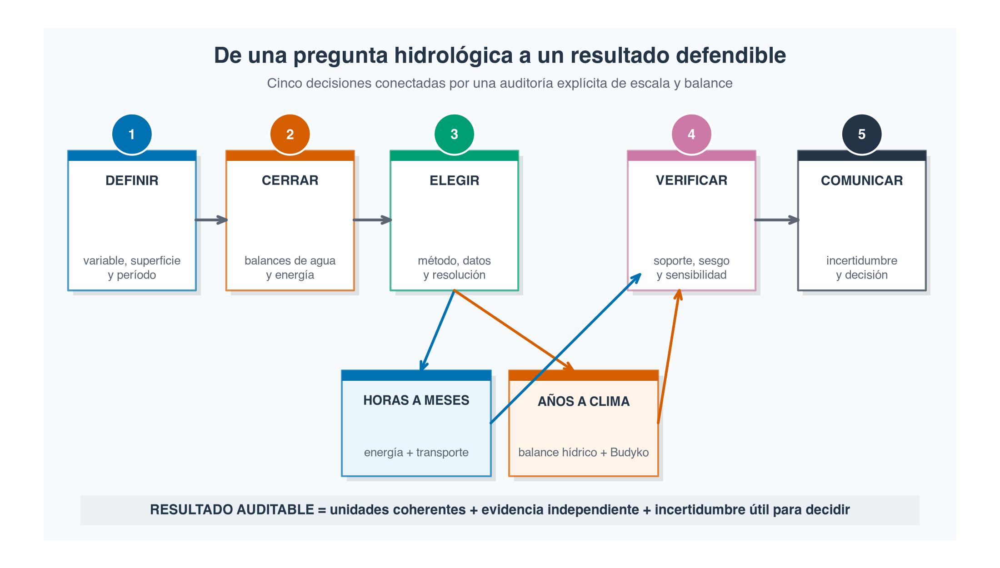
Figura 8.24 Flujo de trabajo mínimo para aplicar conceptos de evaporación en hidrología. Elaboración propia.
Lista de control antes de entregar un resultado
¿La variable es evaporación real, potencial, de referencia, de cultivo o de bandeja?
¿Todas las series usan el mismo intervalo, soporte y convención de signo?
¿Radiación y flujos de calor tienen unidades energéticas coherentes?
¿Se distinguió demanda atmosférica de disponibilidad de agua?
¿La comparación respeta la escala observada por cada método?
¿El balance incluye almacenamiento, transferencias y uso humano relevantes?
¿La aplicación de Budyko usa un período suficientemente largo?
¿Se evaluó sensibilidad a método de \(ET_0\), curva y parámetro?
¿Las conclusiones causales están respaldadas por datos independientes?
¿La incertidumbre se expresa en la variable de decisión, como volumen útil o caudal?
8.10. Verificación de aprendizaje
Preguntas conceptuales
Distinga evaporación, transpiración, evapotranspiración real, evapotranspiración potencial y evapotranspiración de referencia. ¿Por qué intercambiar estos conceptos puede conducir a errores en un balance hídrico?
Explique cómo interactúan la disponibilidad de energía, el transporte turbulento y el suministro de agua para controlar la evaporación. ¿Cuál de estos controles esperaría que dominara sobre una superficie húmeda y cuál sobre un suelo seco?
¿Por qué una bandeja, un lisímetro, una torre de covarianza de remolinos, un producto satelital y un balance de cuenca no entregan estimaciones directamente intercambiables? Considere soporte espacial, escala temporal y variable observada.
Explique los límites de agua y energía del marco de Budyko y el significado agregado del parámetro \(\omega\). ¿Por qué un cambio en \(\omega\) no identifica por sí solo una causa física única?
Preguntas numéricas y de aplicación
Conversión energía-agua. Una superficie recibe \(R_n=14\ \mathrm{MJ\,m^{-2}\,d^{-1}}\); \(G=1.5\), \(H=4.0\) y el almacenamiento es despreciable. Calcule \(\lambda E\), conviértalo a mm por día con \(\lambda_v=2.45\ \mathrm{MJ\,kg^{-1}}\) y discuta el efecto de un error de 1 MJ por metro cuadrado y día en H.
Radiación neta. Para \(R_s=22\ \mathrm{MJ\,m^{-2}\,d^{-1}}\), \(\alpha=0.23\) y \(R_{nl}=5.1\ \mathrm{MJ\,m^{-2}\,d^{-1}}\), calcule \(R_n\). Repita con nieve de \(\alpha=0.80\) y explique la diferencia.
Selección de método. Proponga métodos para: (a) pérdida mensual de un embalse; (b) ET diaria de un cultivo; (c) ET anual de una cuenca de 5 000 km²; y (d) transpiración de una plantación. Justifique soporte, datos y validación.
Budyko. Para \(P=700\ \mathrm{mm\,a^{-1}}\), \(ET_0=1100\ \mathrm{mm\,a^{-1}}\) y \(\omega=2.3\), estime ET y Q. Compare con \(\omega=3.0\) e interprete el cambio sin atribuirlo automáticamente a vegetación.
Auditoría. Una cuenca aparece sobre \(ET/P=1\). Enumere hipótesis físicas y errores de datos antes de eliminar el punto. Diseñe observaciones para distinguir agotamiento de almacenamiento, importación de riego y subestimación de P.
Cambio hidroclimático. Diseñe un experimento factorial que cambie P, radiación, humedad y viento por separado y en conjunto. Compare Penman-Monteith, una fórmula de temperatura y una relación de Budyko. Indique qué conclusiones dependen de la escala.
Orientaciones para discusión y evaluación. En la actividad 1, el balance entrega \(\lambda E=8.5\ \mathrm{MJ\,m^{-2}\,d^{-1}}\) y, por tanto, aproximadamente 3.47 mm por día. Un error positivo de 1 MJ por metro cuadrado y día en H reduce la ET estimada cerca de 0.41 mm por día. La respuesta completa debe explicar que esta sensibilidad supone correctos los demás términos y que un error de cierre puede repartirse de varias maneras. En la actividad 2, \(R_n\) vale 11.84 para la primera superficie y -0.70 \(\mathrm{MJ\,m^{-2}\,d^{-1}}\) para la nieve si se conserva \(R_{nl}\). El signo negativo no implica condensación automática: primero indica pérdida radiativa neta; el flujo de agua depende además de transporte, temperatura de superficie y suministro. La Figura 8.9 ayuda a revisar signos antes de calcular.
Para la actividad 3 se evalúa la coherencia entre pregunta y soporte, no la elección de una marca instrumental. Una respuesta defendible puede combinar balance de volumen y energía en el embalse; Penman-Monteith, lisímetro o balance de suelo para el cultivo; P-Q con almacenamiento y contraste satelital para la cuenca; y flujo de savia junto con covarianza de remolinos para la plantación. Debe explicitarse qué mide cada método, cómo se escala y qué observación independiente podría refutar el resultado. Proponer una bandeja sin coeficiente para toda la cuenca, o una torre puntual sin análisis de representatividad, revela confusión de soporte.
En la actividad 4 interesa tanto el cálculo como la interpretación. El estudiante debe ubicar ambos casos respecto de los límites de la Figura 8.18, verificar \(0\leq ET/P\leq1\) y reconocer que elevar \(\omega\) reduce Q para las mismas forzantes. No debe concluir que el cambio se debe necesariamente a bosque: almacenamiento, suelos, estacionalidad, transferencias y sesgos también pueden desplazar el parámetro. Una extensión útil consiste en repetir el cálculo con otra familia de Budyko y comparar la incertidumbre estructural con el efecto de cambiar \(\omega\).
La actividad 5 admite más de una causa y debe calificarse como diagnóstico. \(ET/P>1\) puede ser físicamente posible durante un período con agotamiento de reservas o con importación de agua, pero no como régimen indefinido de una cuenca cerrada sin entradas adicionales. Entre los errores plausibles están subcaptura de nieve o precipitación orográfica, área inconsistente, caudal incompleto, período desalineado y producto de ET sesgado. Pozos, gravimetría, niveles de embalse, trazadores, registros de riego, balance de nieve y una red pluviométrica altitudinal permiten separar hipótesis. El mérito está en formular predicciones observables para cada explicación antes de descartar el dato.
En la actividad 6, el diseño factorial debe conservar una línea base común y modificar una forzante por vez, además de combinaciones que permitan detectar interacción. Se esperan resultados distintos entre una superficie húmeda y otra limitada por agua: aumentar radiación o déficit puede elevar ET en la primera y apenas modificarla, o incluso adelantar su agotamiento, en la segunda. La fórmula de temperatura confundirá parte de esos mecanismos; Penman-Monteith separará controles radiativo y aerodinámico; Budyko responderá a cambios agregados de P y demanda, pero no al orden diario de los eventos. Una buena conclusión identifica qué diferencias son físicas y cuáles provienen de resolución temporal o estructura del método.
Como pauta general, puede asignarse 30 % al balance y unidades, 25 % a la representación explícita de agua, energía y transporte, 25 % a la evaluación de supuestos y escala, y 20 % a la comunicación de incertidumbre. El flujo de la Figura 8.24 ofrece una rúbrica compacta: definir, cerrar, elegir, verificar y comunicar. Una solución numéricamente correcta que omita el soporte o confunda demanda con consumo no debería considerarse completa.
8.11. Referencias
Allen, R. G., Pereira, L. S., Raes, D., and Smith, M. Crop Evapotranspiration: Guidelines for Computing Crop Water Requirements. Number 56 in FAO Irrigation and Drainage Paper. Food and Agriculture Organization of the United Nations, Rome, 1998. ISBN 9251042195.
Baldocchi, D. D. Assessing the eddy covariance technique for evaluating carbon dioxide exchange rates of ecosystems: past, present and future. Global Change Biology, 9(4):479–492, 2003. doi:10.1046/j.1365-2486.2003.00629.x.
Baris, M. and Tombul, M. A review on models, products and techniques for evapotranspiration measurement, estimation, and validation. Environmental Quality Management, 34(1):e22250, 2024. doi:10.1002/tqem.22250.
Brutsaert, W. Evaporation into the Atmosphere: Theory, History, and Applications. D. Reidel, Dordrecht, 1982. doi:10.1007/978-94-017-1497-6.
Budyko, M. I. Climate and Life. Academic Press, New York, 1974. doi:10.1016/B978-0-12-139450-9.50001-7.
Chow, V. T., Maidment, D. R., and Mays, L. W. Applied Hydrology. McGraw-Hill, New York, 1988. ISBN 9780070108103.
Davie, T. Fundamentals of Hydrology. Routledge, London, 2nd edition, 2008. ISBN 9780415399876.
Dembélé, M., Ceperley, N., Zwart, S. J., Salvadore, E., Mariethoz, G., and Schaefli, B. Potential of satellite and reanalysis evaporation datasets for hydrological modelling under various model calibration strategies. Advances in Water Resources, 143:103667, 2020. doi:10.1016/j.advwatres.2020.103667.
Donohue, R. J., Roderick, M. L., and McVicar, T. R. On the importance of including vegetation dynamics in budyko's hydrological model. Hydrology and Earth System Sciences, 11(2):983–995, 2007. doi:10.5194/hess-11-983-2007.
Fisher, J. B., Melton, F., Middleton, E., and others. The future of evapotranspiration: global requirements for ecosystem functioning, carbon and climate feedbacks, agricultural management, and water resources. Water Resources Research, 53(4):2618–2626, 2017. doi:10.1002/2016WR020175.
Fu, B. On the calculation of the evaporation from land surface. Scientia Atmospherica Sinica, 5(1):23–31, 1981.
Gelaro, R., McCarty, W., Suárez, M. J., Todling, R., Molod, A., Takacs, L., Randles, C. A., Darmenov, A., Bosilovich, M. G., Reichle, R., and others. The modern-era retrospective analysis for research and applications, version 2 (MERRA-2). Journal of Climate, 30(14):5419–5454, 2017. doi:10.1175/JCLI-D-16-0758.1.
Gentine, P., D'Odorico, P., Lintner, B. R., Sivandran, G., and Salvucci, G. Interdependence of climate, soil, and vegetation as constrained by the budyko curve. Geophysical Research Letters, 39:L19404, 2012. doi:10.1029/2012GL053492.
Hargreaves, G. H. and Samani, Z. A. Reference crop evapotranspiration from temperature. Applied Engineering in Agriculture, 1(2):96–99, 1985. doi:10.13031/2013.26773.
Jung, M., Koirala, S., Weber, U., Ichii, K., Gans, F., Camps-Valls, G., Papale, D., Schwalm, C., Tramontana, G., Reichstein, M., and others. The FLUXCOM ensemble of global land-atmosphere energy fluxes. Scientific Data, 6:74, 2019. doi:10.1038/s41597-019-0076-8.
Kalma, J. D., McVicar, T. R., and McCabe, M. F. Estimating land surface evaporation: a review of methods using remotely sensed surface temperature data. Surveys in Geophysics, 29(4–5):421–469, 2008. doi:10.1007/s10712-008-9037-z.
Kopp, G. and Lean, J. L. A new, lower value of total solar irradiance: evidence and climate significance. Geophysical Research Letters, 38:L01706, 2011. doi:10.1029/2010GL045777.
Lu, J., Wang, G., Chen, T., Li, S., Hagan, D. F. T., Kattel, G., Peng, J., Jiang, T., and Su, B. A harmonized global land evaporation dataset from model-based products covering 1980–2017. Earth System Science Data, 13(12):5879–5898, 2021. doi:10.5194/essd-13-5879-2021.
Masson-Delmotte, V., Zhai, P., Pirani, A., and others, editors. Climate Change 2021: The Physical Science Basis. Cambridge University Press, Cambridge and New York, 2021. doi:10.1017/9781009157896.
Miralles, D. G., Bonte, O., Koppa, A., Baez-Villanueva, O. M., Tronquo, E., Zhong, F., Beck, H. E., Hulsman, P., Dorigo, W., Verhoest, N. E. C., and Haghdoost, S. GLEAM4: global land evaporation and soil moisture dataset at 0.1 degree resolution from 1980 to near present. Scientific Data, 12:416, 2025. doi:10.1038/s41597-025-04610-y.
Miralles, D. G., Brutsaert, W., Dolman, A. J., and Gash, J. H. On the use of the term “evapotranspiration”. Water Resources Research, 56(11):e2020WR028055, 2020. doi:10.1029/2020WR028055.
Monteith, J. L. Evaporation and environment. In The State and Movement of Water in Living Organisms, volume 19 of Symposia of the Society for Experimental Biology, pages 205–234. Cambridge University Press, 1965.
Mu, Q., Zhao, M., and Running, S. W. Improvements to a MODIS global terrestrial evapotranspiration algorithm. Remote Sensing of Environment, 115(8):1781–1800, 2011. doi:10.1016/j.rse.2011.02.019.
Muñoz-Sabater, J., Dutra, E., Agustí-Panareda, A., Albergel, C., Arduini, G., Balsamo, G., Boussetta, S., Choulga, M., Harrigan, S., Hersbach, H., and others. ERA5-Land: a state-of-the-art global reanalysis dataset for land applications. Earth System Science Data, 13(9):4349–4383, 2021. doi:10.5194/essd-13-4349-2021.
Penman, H. L. Natural evaporation from open water, bare soil and grass. Proceedings of the Royal Society of London. Series A, 193(1032):120–145, 1948. doi:10.1098/rspa.1948.0037.
Pike, J. G. The estimation of annual run-off from meteorological data in a tropical climate. Journal of Hydrology, 2(2):116–123, 1964. doi:10.1016/0022-1694(64)90022-8.
Priestley, C. H. B. and Taylor, R. J. On the assessment of surface heat flux and evaporation using large-scale parameters. Monthly Weather Review, 100(2):81–92, 1972. doi:10.1175/1520-0493(1972)100<0081:OTAOSH>2.3.CO;2.
Robinson, M. and Ward, R. Hydrology: Principles and Processes. IWA Publishing, 2017.
Rodell, M., Beaudoing, H. K., L'Ecuyer, T. S., and others. The observed state of the water cycle in the early twenty-first century. Journal of Climate, 28(21):8289–8318, 2015. doi:10.1175/JCLI-D-14-00555.1.
Rodell, M., Houser, P. R., Jambor, U., Gottschalck, J., Mitchell, K., Meng, C.-J., Arsenault, K., Cosgrove, B., Radakovich, J., Bosilovich, M., and others. The global land data assimilation system. Bulletin of the American Meteorological Society, 85(3):381–394, 2004. doi:10.1175/BAMS-85-3-381.
Roderick, M. L. and Farquhar, G. D. A simple framework for relating variations in runoff to variations in climatic conditions and catchment properties. Water Resources Research, 47:W00G07, 2011. doi:10.1029/2010WR009826.
Savenije, H. H. G. The importance of interception and why we should delete the term evapotranspiration from our vocabulary. Hydrological Processes, 18(8):1507–1511, 2004. doi:10.1002/hyp.5563.
Schlesinger, W. H. and Jasechko, S. Transpiration in the global water cycle. Agricultural and Forest Meteorology, 189–190:115–117, 2014. doi:10.1016/j.agrformet.2014.01.011.
Senay, G. B., Bohms, S., Singh, R. K., Gowda, P. H., Velpuri, N. M., Alemu, H., and Verdin, J. P. Operational evapotranspiration mapping using remote sensing and weather datasets: a new parameterization for the SSEB approach. Journal of the American Water Resources Association, 49(3):577–591, 2013. doi:10.1111/jawr.12057.
Shuttleworth, W. J. and Wallace, J. S. Evaporation from sparse crops–an energy combination theory. Quarterly Journal of the Royal Meteorological Society, 111(469):839–855, 1985. doi:10.1002/qj.49711146910.
Sposito, G. Understanding the budyko equation. Water, 9(4):236, 2017. doi:10.3390/w9040236.
Stephens, G. L., Li, J., Wild, M., and others. An update on earth's energy balance in light of the latest global observations. Nature Geoscience, 5:691–696, 2012. doi:10.1038/ngeo1580.
Thornthwaite, C. W. An approach toward a rational classification of climate. Geographical Review, 38(1):55–94, 1948. doi:10.2307/210739.
Turc, L. Evaluation des besoins en eau d'irrigation, evapotranspiration potentielle. Annales Agronomiques, 12:13–49, 1961.
Wallace, J. M. and Hobbs, P. V. Atmospheric Science: An Introductory Survey. Elsevier, 2nd edition, 2006.
Wang, K. and Dickinson, R. E. A review of global terrestrial evapotranspiration: observation, modeling, climatology, and climatic variability. Reviews of Geophysics, 50(2):RG2005, 2012. doi:10.1029/2011RG000373.
Williams, C. A., Reichstein, M., Buchmann, N., and others. Climate and vegetation controls on the surface water balance: synthesis of evapotranspiration measured across a global network of flux towers. Water Resources Research, 48:W06523, 2012. doi:10.1029/2011WR011586.
Yang, H., Yang, D., Lei, Z., and Sun, F. New analytical derivation of the mean annual water-energy balance equation. Water Resources Research, 44:W03410, 2008. doi:10.1029/2007WR006135.
Zhang, L., Hickel, K., Dawes, W. R., Chiew, F. H. S., Western, A. W., and Briggs, P. R. A rational function approach for estimating mean annual evapotranspiration. Water Resources Research, 40:W02502, 2004. doi:10.1029/2003WR002710.
Zhang, Y., Kong, D., Gan, R., Chiew, F. H. S., McVicar, T. R., Zhang, Q., and Yang, Y. Coupled estimation of 500 m and 8-day resolution global evapotranspiration and gross primary production in 2002–2017. Remote Sensing of Environment, 222:165–182, 2019. doi:10.1016/j.rse.2018.12.031.